Exercise 12： Let KCBD and DAEC be parallelograms. GACK is a trapezoid with AG//CK and AG=2CK. F is the midpoint of AK. EA⊥FB. Given that G, K, B are collinear and A, C, B are collinear, prove that GK\(\cdot\)KB=2\(\cdot\)AB\(\cdot\)CB.
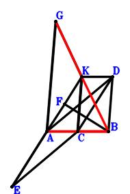
\(\because \) KCBD is a parallelogram \(\therefore \small\overrightarrow{AD}=\small\overrightarrow{AB} - \small\overrightarrow{AC} + \small\overrightarrow{AK}\).\(\because \) DAEC is a parallelogram \(\therefore \small\overrightarrow{AE}=\small\overrightarrow{AC} - \small\overrightarrow{AD}=- \small\overrightarrow{AB} + 2 \small\overrightarrow{AC} - \small\overrightarrow{AK}\).\(\because \) F is the midpoint of AK \(\therefore \small\overrightarrow{AF}=\dfrac{\small\overrightarrow{AK}}{2}\).\(\because \) AG//CK and AG=2CK \(\therefore \small\overrightarrow{AG}=- 2 \small\overrightarrow{AC} + 2 \small\overrightarrow{AK}\).\(\because \) EA⊥FB \( \therefore\small\overrightarrow{BF} \cdot \small\overrightarrow{EA}=- \small\overrightarrow{AE} \cdot \left(- \small\overrightarrow{AB} + \small\overrightarrow{AF}\right)=- \left(- \small\overrightarrow{AB} + \dfrac{\small\overrightarrow{AK}}{2}\right) \cdot \left(- \small\overrightarrow{AB} + 2 \small\overrightarrow{AC} - \small\overrightarrow{AK}\right)=- \small\overrightarrow{AB}^{2} + 2 \small\overrightarrow{AB} \cdot \small\overrightarrow{AC} - \dfrac{\small\overrightarrow{AB} \cdot \small\overrightarrow{AK}}{2} - \small\overrightarrow{AC} \cdot \small\overrightarrow{AK} + \dfrac{\small\overrightarrow{AK}^{2}}{2}=0.\)In conclusion, \(2 \small\overrightarrow{AB} \cdot \small\overrightarrow{CB} + \small\overrightarrow{BK} \cdot \small\overrightarrow{GK}=2 \small\overrightarrow{AB} \cdot \left(\small\overrightarrow{AB} - \small\overrightarrow{AC}\right) + \left(- \small\overrightarrow{AB} + \small\overrightarrow{AK}\right) \cdot \left(- \small\overrightarrow{AG} + \small\overrightarrow{AK}\right)=2 \small\overrightarrow{AB} \cdot \left(\small\overrightarrow{AB} - \small\overrightarrow{AC}\right) + \left(- \small\overrightarrow{AB} + \small\overrightarrow{AK}\right) \cdot \left(2 \small\overrightarrow{AC} - \small\overrightarrow{AK}\right)=2 \small\overrightarrow{AB}^{2} - 4 \small\overrightarrow{AB} \cdot \small\overrightarrow{AC} + \small\overrightarrow{AB} \cdot \small\overrightarrow{AK} + 2 \small\overrightarrow{AC} \cdot \small\overrightarrow{AK} - \small\overrightarrow{AK}^{2}=0\)\(\because\) G, K, B are collinear and A, C, B are collinear \(\therefore\) GK\(\cdot\)KB=2\(\cdot\)AB\(\cdot\)CB.
Exercise 29： Let CKDB be a parallelogram. AFKC is a trapezoid with FA//KC and FA=2KC. E is the midpoint of KA. DC⊥EB. Given that F, K, B are collinear and A, C, B are collinear, prove that FK\(\cdot\)KB=2\(\cdot\)AB\(\cdot\)CB.
\(\because \) CKDB is a parallelogram \(\therefore \small\overrightarrow{BD}=- \small\overrightarrow{BC} + \small\overrightarrow{BK}\).\(\because \) E is the midpoint of KA \(\therefore \small\overrightarrow{BE}=\dfrac{\small\overrightarrow{BA}}{2} + \dfrac{\small\overrightarrow{BK}}{2}\).\(\because \) FA//KC and FA=2KC \(\therefore \small\overrightarrow{BF}=\small\overrightarrow{BA} - 2 \small\overrightarrow{BC} + 2 \small\overrightarrow{BK}\).\(\because \) DC⊥EB \( \therefore\small\overrightarrow{BE} \cdot \small\overrightarrow{CD}=\small\overrightarrow{BE} \cdot \left(- \small\overrightarrow{BC} + \small\overrightarrow{BD}\right)=\left(\dfrac{\small\overrightarrow{BA}}{2} + \dfrac{\small\overrightarrow{BK}}{2}\right) \cdot \left(- 2 \small\overrightarrow{BC} + \small\overrightarrow{BK}\right)=- \small\overrightarrow{BA} \cdot \small\overrightarrow{BC} + \dfrac{\small\overrightarrow{BA} \cdot \small\overrightarrow{BK}}{2} - \small\overrightarrow{BC} \cdot \small\overrightarrow{BK} + \dfrac{\small\overrightarrow{BK}^{2}}{2}=0.\)In conclusion, \(2 \small\overrightarrow{AB} \cdot \small\overrightarrow{CB} + \small\overrightarrow{BK} \cdot \small\overrightarrow{FK}=2 \small\overrightarrow{BA} \cdot \small\overrightarrow{BC} + \small\overrightarrow{BK} \cdot \left(- \small\overrightarrow{BF} + \small\overrightarrow{BK}\right)=2 \small\overrightarrow{BA} \cdot \small\overrightarrow{BC} + \small\overrightarrow{BK} \cdot \left(- \small\overrightarrow{BA} + 2 \small\overrightarrow{BC} - \small\overrightarrow{BK}\right)=2 \small\overrightarrow{BA} \cdot \small\overrightarrow{BC} - \small\overrightarrow{BA} \cdot \small\overrightarrow{BK} + 2 \small\overrightarrow{BC} \cdot \small\overrightarrow{BK} - \small\overrightarrow{BK}^{2}=0\)\(\because\) F, K, B are collinear and A, C, B are collinear \(\therefore\) FK\(\cdot\)KB=2\(\cdot\)AB\(\cdot\)CB.
Exercise 30： Let AFKC be a trapezoid with FA//KC and FA=2KC. E, D are the midpoints of KB, KA, respectively. DB⊥EC. Given that F, K, B are collinear and A, C, B are collinear, prove that FK\(\cdot\)KB=2\(\cdot\)AB\(\cdot\)CB.
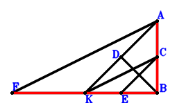
\(\because \) D is the midpoint of KA \(\therefore \small\overrightarrow{BD}=\dfrac{\small\overrightarrow{BA}}{2} + \dfrac{\small\overrightarrow{BK}}{2}\).\(\because \) E is the midpoint of KB \(\therefore \small\overrightarrow{BE}=\dfrac{\small\overrightarrow{BK}}{2}\).\(\because \) FA//KC and FA=2KC \(\therefore \small\overrightarrow{BF}=\small\overrightarrow{BA} - 2 \small\overrightarrow{BC} + 2 \small\overrightarrow{BK}\).\(\because \) DB⊥EC \( \therefore\small\overrightarrow{BD} \cdot \small\overrightarrow{CE}=\small\overrightarrow{BD} \cdot \left(- \small\overrightarrow{BC} + \small\overrightarrow{BE}\right)=\left(\dfrac{\small\overrightarrow{BA}}{2} + \dfrac{\small\overrightarrow{BK}}{2}\right) \cdot \left(- \small\overrightarrow{BC} + \dfrac{\small\overrightarrow{BK}}{2}\right)=- \dfrac{\small\overrightarrow{BA} \cdot \small\overrightarrow{BC}}{2} + \dfrac{\small\overrightarrow{BA} \cdot \small\overrightarrow{BK}}{4} - \dfrac{\small\overrightarrow{BC} \cdot \small\overrightarrow{BK}}{2} + \dfrac{\small\overrightarrow{BK}^{2}}{4}=0.\)In conclusion, \(2 \small\overrightarrow{AB} \cdot \small\overrightarrow{CB} + \small\overrightarrow{BK} \cdot \small\overrightarrow{FK}=2 \small\overrightarrow{BA} \cdot \small\overrightarrow{BC} + \small\overrightarrow{BK} \cdot \left(- \small\overrightarrow{BF} + \small\overrightarrow{BK}\right)=2 \small\overrightarrow{BA} \cdot \small\overrightarrow{BC} + \small\overrightarrow{BK} \cdot \left(- \small\overrightarrow{BA} + 2 \small\overrightarrow{BC} - \small\overrightarrow{BK}\right)=2 \small\overrightarrow{BA} \cdot \small\overrightarrow{BC} - \small\overrightarrow{BA} \cdot \small\overrightarrow{BK} + 2 \small\overrightarrow{BC} \cdot \small\overrightarrow{BK} - \small\overrightarrow{BK}^{2}=0\)\(\because\) F, K, B are collinear and A, C, B are collinear \(\therefore\) FK\(\cdot\)KB=2\(\cdot\)AB\(\cdot\)CB.
Exercise 35： Let AKEB be a parallelogram. AGKC is a trapezoid with GA//KC and GA=2KC. D, F are the midpoints of KA, EA, respectively. DB⊥FC. Given that G, K, B are collinear and A, C, B are collinear, prove that GK\(\cdot\)KB=2\(\cdot\)AB\(\cdot\)CB.
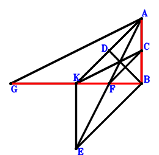
\(\because \) D is the midpoint of KA \(\therefore \small\overrightarrow{BD}=\dfrac{\small\overrightarrow{BA}}{2} + \dfrac{\small\overrightarrow{BK}}{2}\).\(\because \) AKEB is a parallelogram \(\therefore \small\overrightarrow{BE}=- \small\overrightarrow{BA} + \small\overrightarrow{BK}\).\(\because \) F is the midpoint of EA \(\therefore \small\overrightarrow{BF}=\dfrac{\small\overrightarrow{BA}}{2} + \dfrac{\small\overrightarrow{BE}}{2}=\dfrac{\small\overrightarrow{BK}}{2}\).\(\because \) GA//KC and GA=2KC \(\therefore \small\overrightarrow{BG}=\small\overrightarrow{BA} - 2 \small\overrightarrow{BC} + 2 \small\overrightarrow{BK}\).\(\because \) DB⊥FC \( \therefore\small\overrightarrow{BD} \cdot \small\overrightarrow{CF}=\small\overrightarrow{BD} \cdot \left(- \small\overrightarrow{BC} + \small\overrightarrow{BF}\right)=\left(\dfrac{\small\overrightarrow{BA}}{2} + \dfrac{\small\overrightarrow{BK}}{2}\right) \cdot \left(- \small\overrightarrow{BC} + \dfrac{\small\overrightarrow{BK}}{2}\right)=- \dfrac{\small\overrightarrow{BA} \cdot \small\overrightarrow{BC}}{2} + \dfrac{\small\overrightarrow{BA} \cdot \small\overrightarrow{BK}}{4} - \dfrac{\small\overrightarrow{BC} \cdot \small\overrightarrow{BK}}{2} + \dfrac{\small\overrightarrow{BK}^{2}}{4}=0.\)In conclusion, \(2 \small\overrightarrow{AB} \cdot \small\overrightarrow{CB} + \small\overrightarrow{BK} \cdot \small\overrightarrow{GK}=2 \small\overrightarrow{BA} \cdot \small\overrightarrow{BC} + \small\overrightarrow{BK} \cdot \left(- \small\overrightarrow{BG} + \small\overrightarrow{BK}\right)=2 \small\overrightarrow{BA} \cdot \small\overrightarrow{BC} + \small\overrightarrow{BK} \cdot \left(- \small\overrightarrow{BA} + 2 \small\overrightarrow{BC} - \small\overrightarrow{BK}\right)=2 \small\overrightarrow{BA} \cdot \small\overrightarrow{BC} - \small\overrightarrow{BA} \cdot \small\overrightarrow{BK} + 2 \small\overrightarrow{BC} \cdot \small\overrightarrow{BK} - \small\overrightarrow{BK}^{2}=0\)\(\because\) G, K, B are collinear and A, C, B are collinear \(\therefore\) GK\(\cdot\)KB=2\(\cdot\)AB\(\cdot\)CB.
Exercise 36： Let AGKC be a trapezoid with GA//KC and GA=2KC. E is the centroid of △AKB. F, E, A are collinear and FA=3FE. D is the midpoint of KA. DB⊥FC. Given that G, K, B are collinear and A, C, B are collinear, prove that GK\(\cdot\)KB=2\(\cdot\)AB\(\cdot\)CB.
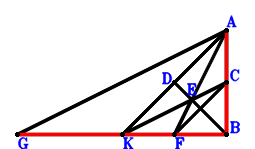
\(\because \) D is the midpoint of KA \(\therefore \small\overrightarrow{BD}=\dfrac{\small\overrightarrow{BA}}{2} + \dfrac{\small\overrightarrow{BK}}{2}\).\(\because \) E is the centroid of △AKB \(\therefore \small\overrightarrow{BE}=\dfrac{\small\overrightarrow{BA}}{3} + \dfrac{\small\overrightarrow{BK}}{3}\).\(\because \) F, E, A are collinear and FA=3FE \(\therefore \small\overrightarrow{BF}=- \dfrac{\small\overrightarrow{BA}}{2} + \dfrac{3 \small\overrightarrow{BE}}{2}=\dfrac{\small\overrightarrow{BK}}{2}\).\(\because \) GA//KC and GA=2KC \(\therefore \small\overrightarrow{BG}=\small\overrightarrow{BA} - 2 \small\overrightarrow{BC} + 2 \small\overrightarrow{BK}\).\(\because \) DB⊥FC \( \therefore\small\overrightarrow{BD} \cdot \small\overrightarrow{CF}=\small\overrightarrow{BD} \cdot \left(- \small\overrightarrow{BC} + \small\overrightarrow{BF}\right)=\left(\dfrac{\small\overrightarrow{BA}}{2} + \dfrac{\small\overrightarrow{BK}}{2}\right) \cdot \left(- \small\overrightarrow{BC} + \dfrac{\small\overrightarrow{BK}}{2}\right)=- \dfrac{\small\overrightarrow{BA} \cdot \small\overrightarrow{BC}}{2} + \dfrac{\small\overrightarrow{BA} \cdot \small\overrightarrow{BK}}{4} - \dfrac{\small\overrightarrow{BC} \cdot \small\overrightarrow{BK}}{2} + \dfrac{\small\overrightarrow{BK}^{2}}{4}=0.\)In conclusion, \(2 \small\overrightarrow{AB} \cdot \small\overrightarrow{CB} + \small\overrightarrow{BK} \cdot \small\overrightarrow{GK}=2 \small\overrightarrow{BA} \cdot \small\overrightarrow{BC} + \small\overrightarrow{BK} \cdot \left(- \small\overrightarrow{BG} + \small\overrightarrow{BK}\right)=2 \small\overrightarrow{BA} \cdot \small\overrightarrow{BC} + \small\overrightarrow{BK} \cdot \left(- \small\overrightarrow{BA} + 2 \small\overrightarrow{BC} - \small\overrightarrow{BK}\right)=2 \small\overrightarrow{BA} \cdot \small\overrightarrow{BC} - \small\overrightarrow{BA} \cdot \small\overrightarrow{BK} + 2 \small\overrightarrow{BC} \cdot \small\overrightarrow{BK} - \small\overrightarrow{BK}^{2}=0\)\(\because\) G, K, B are collinear and A, C, B are collinear \(\therefore\) GK\(\cdot\)KB=2\(\cdot\)AB\(\cdot\)CB.
Exercise 61： Let BFEC be a trapezoid with BC//FE and BC=2FE. GKAC is a trapezoid with KA//GC and KA=2GC. D, E are the midpoints of CA, KA, respectively. FD⊥BE. Given that B, C, A are collinear and K, G, B are collinear, prove that BA\(\cdot\)BC=KG\(\cdot\)KB.
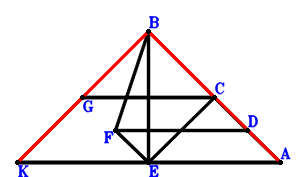
\(\because \) D is the midpoint of CA \(\therefore \small\overrightarrow{AD}=\dfrac{\small\overrightarrow{AC}}{2}\).\(\because \) E is the midpoint of KA \(\therefore \small\overrightarrow{AE}=\dfrac{\small\overrightarrow{AK}}{2}\).\(\because \) BC//FE and BC=2FE \(\therefore \small\overrightarrow{AF}=\dfrac{\small\overrightarrow{AB}}{2} - \dfrac{\small\overrightarrow{AC}}{2} + \dfrac{\small\overrightarrow{AK}}{2}\).\(\because \) KA//GC and KA=2GC \(\therefore \small\overrightarrow{AG}=\small\overrightarrow{AC} + \dfrac{\small\overrightarrow{AK}}{2}\).\(\because \) FD⊥BE \( \therefore\small\overrightarrow{BE} \cdot \small\overrightarrow{DF}=\left(- \small\overrightarrow{AB} + \small\overrightarrow{AE}\right) \cdot \left(- \small\overrightarrow{AD} + \small\overrightarrow{AF}\right)=\left(- \small\overrightarrow{AB} + \dfrac{\small\overrightarrow{AK}}{2}\right) \cdot \left(\dfrac{\small\overrightarrow{AB}}{2} - \small\overrightarrow{AC} + \dfrac{\small\overrightarrow{AK}}{2}\right)=- \dfrac{\small\overrightarrow{AB}^{2}}{2} + \small\overrightarrow{AB} \cdot \small\overrightarrow{AC} - \dfrac{\small\overrightarrow{AB} \cdot \small\overrightarrow{AK}}{4} - \dfrac{\small\overrightarrow{AC} \cdot \small\overrightarrow{AK}}{2} + \dfrac{\small\overrightarrow{AK}^{2}}{4}=0.\)In conclusion, \(\small\overrightarrow{AB} \cdot \small\overrightarrow{CB} + \small\overrightarrow{BK} \cdot \small\overrightarrow{KG}=\small\overrightarrow{AB} \cdot \left(\small\overrightarrow{AB} - \small\overrightarrow{AC}\right) + \left(- \small\overrightarrow{AB} + \small\overrightarrow{AK}\right) \cdot \left(\small\overrightarrow{AG} - \small\overrightarrow{AK}\right)=\small\overrightarrow{AB} \cdot \left(\small\overrightarrow{AB} - \small\overrightarrow{AC}\right) + \left(- \small\overrightarrow{AB} + \small\overrightarrow{AK}\right) \cdot \left(\small\overrightarrow{AC} - \dfrac{\small\overrightarrow{AK}}{2}\right)=\small\overrightarrow{AB}^{2} - 2 \small\overrightarrow{AB} \cdot \small\overrightarrow{AC} + \dfrac{\small\overrightarrow{AB} \cdot \small\overrightarrow{AK}}{2} + \small\overrightarrow{AC} \cdot \small\overrightarrow{AK} - \dfrac{\small\overrightarrow{AK}^{2}}{2}=0\)\(\because\) B, C, A are collinear and K, G, B are collinear \(\therefore\) BA\(\cdot\)BC=KG\(\cdot\)KB.
Exercise 73： Let BEKC be a parallelogram. HKAC is a trapezoid with KA//HC and KA=2HC. G, D, F are the midpoints of KA, CA, EA, respectively. FD⊥BG. Given that B, C, A are collinear and K, H, B are collinear, prove that BA\(\cdot\)BC=KH\(\cdot\)KB.
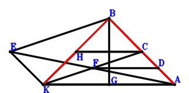
\(\because \) D is the midpoint of CA \(\therefore \small\overrightarrow{AD}=\dfrac{\small\overrightarrow{AC}}{2}\).\(\because \) BEKC is a parallelogram \(\therefore \small\overrightarrow{AE}=\small\overrightarrow{AB} - \small\overrightarrow{AC} + \small\overrightarrow{AK}\).\(\because \) F is the midpoint of EA \(\therefore \small\overrightarrow{AF}=\dfrac{\small\overrightarrow{AE}}{2}=\dfrac{\small\overrightarrow{AB}}{2} - \dfrac{\small\overrightarrow{AC}}{2} + \dfrac{\small\overrightarrow{AK}}{2}\).\(\because \) G is the midpoint of KA \(\therefore \small\overrightarrow{AG}=\dfrac{\small\overrightarrow{AK}}{2}\).\(\because \) KA//HC and KA=2HC \(\therefore \small\overrightarrow{AH}=\small\overrightarrow{AC} + \dfrac{\small\overrightarrow{AK}}{2}\).\(\because \) FD⊥BG \( \therefore\small\overrightarrow{BG} \cdot \small\overrightarrow{DF}=\left(- \small\overrightarrow{AB} + \small\overrightarrow{AG}\right) \cdot \left(- \small\overrightarrow{AD} + \small\overrightarrow{AF}\right)=\left(- \small\overrightarrow{AB} + \dfrac{\small\overrightarrow{AK}}{2}\right) \cdot \left(\dfrac{\small\overrightarrow{AB}}{2} - \small\overrightarrow{AC} + \dfrac{\small\overrightarrow{AK}}{2}\right)=- \dfrac{\small\overrightarrow{AB}^{2}}{2} + \small\overrightarrow{AB} \cdot \small\overrightarrow{AC} - \dfrac{\small\overrightarrow{AB} \cdot \small\overrightarrow{AK}}{4} - \dfrac{\small\overrightarrow{AC} \cdot \small\overrightarrow{AK}}{2} + \dfrac{\small\overrightarrow{AK}^{2}}{4}=0.\)In conclusion, \(\small\overrightarrow{AB} \cdot \small\overrightarrow{CB} + \small\overrightarrow{BK} \cdot \small\overrightarrow{KH}=\small\overrightarrow{AB} \cdot \left(\small\overrightarrow{AB} - \small\overrightarrow{AC}\right) + \left(- \small\overrightarrow{AB} + \small\overrightarrow{AK}\right) \cdot \left(\small\overrightarrow{AH} - \small\overrightarrow{AK}\right)=\small\overrightarrow{AB} \cdot \left(\small\overrightarrow{AB} - \small\overrightarrow{AC}\right) + \left(- \small\overrightarrow{AB} + \small\overrightarrow{AK}\right) \cdot \left(\small\overrightarrow{AC} - \dfrac{\small\overrightarrow{AK}}{2}\right)=\small\overrightarrow{AB}^{2} - 2 \small\overrightarrow{AB} \cdot \small\overrightarrow{AC} + \dfrac{\small\overrightarrow{AB} \cdot \small\overrightarrow{AK}}{2} + \small\overrightarrow{AC} \cdot \small\overrightarrow{AK} - \dfrac{\small\overrightarrow{AK}^{2}}{2}=0\)\(\because\) B, C, A are collinear and K, H, B are collinear \(\therefore\) BA\(\cdot\)BC=KH\(\cdot\)KB.
Exercise 74： Let HKAC be a trapezoid with KA//HC and KA=2HC. E is the centroid of △BKA. F, E, C are collinear and FC=3FE. G, D are the midpoints of KA, CA, respectively. FD⊥BG. Given that B, C, A are collinear and K, H, B are collinear, prove that BA\(\cdot\)BC=KH\(\cdot\)KB.
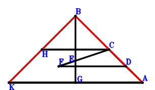
\(\because \) D is the midpoint of CA \(\therefore \small\overrightarrow{AD}=\dfrac{\small\overrightarrow{AC}}{2}\).\(\because \) E is the centroid of △BKA \(\therefore \small\overrightarrow{AE}=\dfrac{\small\overrightarrow{AB}}{3} + \dfrac{\small\overrightarrow{AK}}{3}\).\(\because \) F, E, C are collinear and FC=3FE \(\therefore \small\overrightarrow{AF}=- \dfrac{\small\overrightarrow{AC}}{2} + \dfrac{3 \small\overrightarrow{AE}}{2}=\dfrac{\small\overrightarrow{AB}}{2} - \dfrac{\small\overrightarrow{AC}}{2} + \dfrac{\small\overrightarrow{AK}}{2}\).\(\because \) G is the midpoint of KA \(\therefore \small\overrightarrow{AG}=\dfrac{\small\overrightarrow{AK}}{2}\).\(\because \) KA//HC and KA=2HC \(\therefore \small\overrightarrow{AH}=\small\overrightarrow{AC} + \dfrac{\small\overrightarrow{AK}}{2}\).\(\because \) FD⊥BG \( \therefore\small\overrightarrow{BG} \cdot \small\overrightarrow{DF}=\left(- \small\overrightarrow{AB} + \small\overrightarrow{AG}\right) \cdot \left(- \small\overrightarrow{AD} + \small\overrightarrow{AF}\right)=\left(- \small\overrightarrow{AB} + \dfrac{\small\overrightarrow{AK}}{2}\right) \cdot \left(\dfrac{\small\overrightarrow{AB}}{2} - \small\overrightarrow{AC} + \dfrac{\small\overrightarrow{AK}}{2}\right)=- \dfrac{\small\overrightarrow{AB}^{2}}{2} + \small\overrightarrow{AB} \cdot \small\overrightarrow{AC} - \dfrac{\small\overrightarrow{AB} \cdot \small\overrightarrow{AK}}{4} - \dfrac{\small\overrightarrow{AC} \cdot \small\overrightarrow{AK}}{2} + \dfrac{\small\overrightarrow{AK}^{2}}{4}=0.\)In conclusion, \(\small\overrightarrow{AB} \cdot \small\overrightarrow{CB} + \small\overrightarrow{BK} \cdot \small\overrightarrow{KH}=\small\overrightarrow{AB} \cdot \left(\small\overrightarrow{AB} - \small\overrightarrow{AC}\right) + \left(- \small\overrightarrow{AB} + \small\overrightarrow{AK}\right) \cdot \left(\small\overrightarrow{AH} - \small\overrightarrow{AK}\right)=\small\overrightarrow{AB} \cdot \left(\small\overrightarrow{AB} - \small\overrightarrow{AC}\right) + \left(- \small\overrightarrow{AB} + \small\overrightarrow{AK}\right) \cdot \left(\small\overrightarrow{AC} - \dfrac{\small\overrightarrow{AK}}{2}\right)=\small\overrightarrow{AB}^{2} - 2 \small\overrightarrow{AB} \cdot \small\overrightarrow{AC} + \dfrac{\small\overrightarrow{AB} \cdot \small\overrightarrow{AK}}{2} + \small\overrightarrow{AC} \cdot \small\overrightarrow{AK} - \dfrac{\small\overrightarrow{AK}^{2}}{2}=0\)\(\because\) B, C, A are collinear and K, H, B are collinear \(\therefore\) BA\(\cdot\)BC=KH\(\cdot\)KB.
Exercise 98： Let DKEA be a parallelogram. DCBA is a rectangle. GKAC is a trapezoid with KA//GC and KA=2GC. F is the midpoint of KA. Given that G, K, B are collinear and CE//FB, prove that \(CE·FB=GK·KB\).
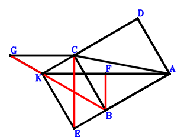
\(\because \) DCBA is a parallelogram \(\therefore \small\overrightarrow{AD}=- \small\overrightarrow{AB} + \small\overrightarrow{AC}\).\(\because \) DKEA is a parallelogram \(\therefore \small\overrightarrow{AE}=- \small\overrightarrow{AD} + \small\overrightarrow{AK}=\small\overrightarrow{AB} - \small\overrightarrow{AC} + \small\overrightarrow{AK}\).\(\because \) F is the midpoint of KA \(\therefore \small\overrightarrow{AF}=\dfrac{\small\overrightarrow{AK}}{2}\).\(\because \) KA//GC and KA=2GC \(\therefore \small\overrightarrow{AG}=\small\overrightarrow{AC} + \dfrac{\small\overrightarrow{AK}}{2}\).\(\because \) CB⊥BA \( \therefore\small\overrightarrow{AB} \cdot \small\overrightarrow{CB}=\small\overrightarrow{AB} \cdot \left(\small\overrightarrow{AB} - \small\overrightarrow{AC}\right)=\small\overrightarrow{AB}^{2} - \small\overrightarrow{AB} \cdot \small\overrightarrow{AC}=0.\)In conclusion, \(\small\overrightarrow{BF} \cdot \small\overrightarrow{CE} + \small\overrightarrow{BK} \cdot \small\overrightarrow{KG}=\left(- \small\overrightarrow{AB} + \small\overrightarrow{AF}\right) \cdot \left(- \small\overrightarrow{AC} + \small\overrightarrow{AE}\right) + \left(- \small\overrightarrow{AB} + \small\overrightarrow{AK}\right) \cdot \left(\small\overrightarrow{AG} - \small\overrightarrow{AK}\right)=\left(- \small\overrightarrow{AB} + \dfrac{\small\overrightarrow{AK}}{2}\right) \cdot \left(\small\overrightarrow{AB} - 2 \small\overrightarrow{AC} + \small\overrightarrow{AK}\right) + \left(- \small\overrightarrow{AB} + \small\overrightarrow{AK}\right) \cdot \left(\small\overrightarrow{AC} - \dfrac{\small\overrightarrow{AK}}{2}\right)=- \small\overrightarrow{AB}^{2} + \small\overrightarrow{AB} \cdot \small\overrightarrow{AC}=0\)\(\because\) G, K, B are collinear and CE//FB \(\therefore\) \(CE·FB=GK·KB\).
Exercise 106： Let DKAC be a trapezoid with KA//DC and KA=2DC. ECBA is a trapezoid with BA//CE and BA=2CE. F is the midpoint of KA. CB⊥BA. Given that D, K, B are collinear and E, F, B are collinear, prove that DK\(\cdot\)KB=2\(\cdot\)EF\(\cdot\)FB.
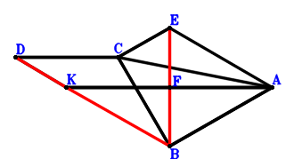
\(\because \) KA//DC and KA=2DC \(\therefore \small\overrightarrow{AD}=\small\overrightarrow{AC} + \dfrac{\small\overrightarrow{AK}}{2}\).\(\because \) BA//CE and BA=2CE \(\therefore \small\overrightarrow{AE}=- \dfrac{\small\overrightarrow{AB}}{2} + \small\overrightarrow{AC}\).\(\because \) F is the midpoint of KA \(\therefore \small\overrightarrow{AF}=\dfrac{\small\overrightarrow{AK}}{2}\).\(\because \) CB⊥BA \( \therefore\small\overrightarrow{AB} \cdot \small\overrightarrow{CB}=\small\overrightarrow{AB} \cdot \left(\small\overrightarrow{AB} - \small\overrightarrow{AC}\right)=\small\overrightarrow{AB}^{2} - \small\overrightarrow{AB} \cdot \small\overrightarrow{AC}=0.\)In conclusion, \(2 \small\overrightarrow{BF} \cdot \small\overrightarrow{EF} + \small\overrightarrow{BK} \cdot \small\overrightarrow{KD}=2 \left(- \small\overrightarrow{AB} + \small\overrightarrow{AF}\right) \cdot \left(- \small\overrightarrow{AE} + \small\overrightarrow{AF}\right) + \left(- \small\overrightarrow{AB} + \small\overrightarrow{AK}\right) \cdot \left(\small\overrightarrow{AD} - \small\overrightarrow{AK}\right)=2 \left(- \small\overrightarrow{AB} + \dfrac{\small\overrightarrow{AK}}{2}\right) \cdot \left(\dfrac{\small\overrightarrow{AB}}{2} - \small\overrightarrow{AC} + \dfrac{\small\overrightarrow{AK}}{2}\right) + \left(- \small\overrightarrow{AB} + \small\overrightarrow{AK}\right) \cdot \left(\small\overrightarrow{AC} - \dfrac{\small\overrightarrow{AK}}{2}\right)=- \small\overrightarrow{AB}^{2} + \small\overrightarrow{AB} \cdot \small\overrightarrow{AC}=0\)\(\because\) D, K, B are collinear and E, F, B are collinear \(\therefore\) DK\(\cdot\)KB=2\(\cdot\)EF\(\cdot\)FB.
Exercise 108： Let ECBA be a rectangle. DKAC is a trapezoid with KA//DC and KA=2DC. F, G are the midpoints of CE, KA, respectively. Given that D, K, B are collinear and F, G, B are collinear, prove that DK\(\cdot\)KB=2\(\cdot\)FG\(\cdot\)GB.
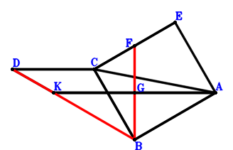
\(\because \) KA//DC and KA=2DC \(\therefore \small\overrightarrow{AD}=\small\overrightarrow{AC} + \dfrac{\small\overrightarrow{AK}}{2}\).\(\because \) ECBA is a parallelogram \(\therefore \small\overrightarrow{AE}=- \small\overrightarrow{AB} + \small\overrightarrow{AC}\).\(\because \) F is the midpoint of CE \(\therefore \small\overrightarrow{AF}=\dfrac{\small\overrightarrow{AC}}{2} + \dfrac{\small\overrightarrow{AE}}{2}=- \dfrac{\small\overrightarrow{AB}}{2} + \small\overrightarrow{AC}\).\(\because \) G is the midpoint of KA \(\therefore \small\overrightarrow{AG}=\dfrac{\small\overrightarrow{AK}}{2}\).\(\because \) CB⊥BA \( \therefore\small\overrightarrow{AB} \cdot \small\overrightarrow{CB}=\small\overrightarrow{AB} \cdot \left(\small\overrightarrow{AB} - \small\overrightarrow{AC}\right)=\small\overrightarrow{AB}^{2} - \small\overrightarrow{AB} \cdot \small\overrightarrow{AC}=0.\)In conclusion, \(2 \small\overrightarrow{BG} \cdot \small\overrightarrow{FG} + \small\overrightarrow{BK} \cdot \small\overrightarrow{KD}=2 \left(- \small\overrightarrow{AB} + \small\overrightarrow{AG}\right) \cdot \left(- \small\overrightarrow{AF} + \small\overrightarrow{AG}\right) + \left(- \small\overrightarrow{AB} + \small\overrightarrow{AK}\right) \cdot \left(\small\overrightarrow{AD} - \small\overrightarrow{AK}\right)=2 \left(- \small\overrightarrow{AB} + \dfrac{\small\overrightarrow{AK}}{2}\right) \cdot \left(\dfrac{\small\overrightarrow{AB}}{2} - \small\overrightarrow{AC} + \dfrac{\small\overrightarrow{AK}}{2}\right) + \left(- \small\overrightarrow{AB} + \small\overrightarrow{AK}\right) \cdot \left(\small\overrightarrow{AC} - \dfrac{\small\overrightarrow{AK}}{2}\right)=- \small\overrightarrow{AB}^{2} + \small\overrightarrow{AB} \cdot \small\overrightarrow{AC}=0\)\(\because\) D, K, B are collinear and F, G, B are collinear \(\therefore\) DK\(\cdot\)KB=2\(\cdot\)FG\(\cdot\)GB.
Exercise 110： Let DKAC be a trapezoid with KA//DC and KA=2DC. FCBE is a trapezoid with CB//FE and CB=2FE. G, E are the midpoints of KA, CA, respectively. CB⊥BA. Given that D, K, B are collinear and F, G, B are collinear, prove that DK\(\cdot\)KB=2\(\cdot\)FG\(\cdot\)GB.
\(\because \) KA//DC and KA=2DC \(\therefore \small\overrightarrow{AD}=\small\overrightarrow{AC} + \dfrac{\small\overrightarrow{AK}}{2}\).\(\because \) E is the midpoint of CA \(\therefore \small\overrightarrow{AE}=\dfrac{\small\overrightarrow{AC}}{2}\).\(\because \) CB//FE and CB=2FE \(\therefore \small\overrightarrow{AF}=- \dfrac{\small\overrightarrow{AB}}{2} + \small\overrightarrow{AC}\).\(\because \) G is the midpoint of KA \(\therefore \small\overrightarrow{AG}=\dfrac{\small\overrightarrow{AK}}{2}\).\(\because \) CB⊥BA \( \therefore\small\overrightarrow{AB} \cdot \small\overrightarrow{CB}=\small\overrightarrow{AB} \cdot \left(\small\overrightarrow{AB} - \small\overrightarrow{AC}\right)=\small\overrightarrow{AB}^{2} - \small\overrightarrow{AB} \cdot \small\overrightarrow{AC}=0.\)In conclusion, \(2 \small\overrightarrow{BG} \cdot \small\overrightarrow{FG} + \small\overrightarrow{BK} \cdot \small\overrightarrow{KD}=2 \left(- \small\overrightarrow{AB} + \small\overrightarrow{AG}\right) \cdot \left(- \small\overrightarrow{AF} + \small\overrightarrow{AG}\right) + \left(- \small\overrightarrow{AB} + \small\overrightarrow{AK}\right) \cdot \left(\small\overrightarrow{AD} - \small\overrightarrow{AK}\right)=2 \left(- \small\overrightarrow{AB} + \dfrac{\small\overrightarrow{AK}}{2}\right) \cdot \left(\dfrac{\small\overrightarrow{AB}}{2} - \small\overrightarrow{AC} + \dfrac{\small\overrightarrow{AK}}{2}\right) + \left(- \small\overrightarrow{AB} + \small\overrightarrow{AK}\right) \cdot \left(\small\overrightarrow{AC} - \dfrac{\small\overrightarrow{AK}}{2}\right)=- \small\overrightarrow{AB}^{2} + \small\overrightarrow{AB} \cdot \small\overrightarrow{AC}=0\)\(\because\) D, K, B are collinear and F, G, B are collinear \(\therefore\) DK\(\cdot\)KB=2\(\cdot\)FG\(\cdot\)GB.
Exercise 112： Let DKAC be a trapezoid with KA//DC and KA=2DC. CKAE is a trapezoid with KA//CE and KA=2CE. G, F are the midpoints of KA, BA, respectively. CB⊥BA. Given that D, K, B are collinear and EF//GB, prove that \(DK·KB=2·EF·GB\).
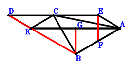
\(\because \) KA//DC and KA=2DC \(\therefore \small\overrightarrow{AD}=\small\overrightarrow{AC} + \dfrac{\small\overrightarrow{AK}}{2}\).\(\because \) KA//CE and KA=2CE \(\therefore \small\overrightarrow{AE}=\small\overrightarrow{AC} - \dfrac{\small\overrightarrow{AK}}{2}\).\(\because \) F is the midpoint of BA \(\therefore \small\overrightarrow{AF}=\dfrac{\small\overrightarrow{AB}}{2}\).\(\because \) G is the midpoint of KA \(\therefore \small\overrightarrow{AG}=\dfrac{\small\overrightarrow{AK}}{2}\).\(\because \) CB⊥BA \( \therefore\small\overrightarrow{AB} \cdot \small\overrightarrow{CB}=\small\overrightarrow{AB} \cdot \left(\small\overrightarrow{AB} - \small\overrightarrow{AC}\right)=\small\overrightarrow{AB}^{2} - \small\overrightarrow{AB} \cdot \small\overrightarrow{AC}=0.\)In conclusion, \(2 \small\overrightarrow{BG} \cdot \small\overrightarrow{EF} + \small\overrightarrow{BK} \cdot \small\overrightarrow{KD}=2 \left(- \small\overrightarrow{AB} + \small\overrightarrow{AG}\right) \cdot \left(- \small\overrightarrow{AE} + \small\overrightarrow{AF}\right) + \left(- \small\overrightarrow{AB} + \small\overrightarrow{AK}\right) \cdot \left(\small\overrightarrow{AD} - \small\overrightarrow{AK}\right)=2 \left(- \small\overrightarrow{AB} + \dfrac{\small\overrightarrow{AK}}{2}\right) \cdot \left(\dfrac{\small\overrightarrow{AB}}{2} - \small\overrightarrow{AC} + \dfrac{\small\overrightarrow{AK}}{2}\right) + \left(- \small\overrightarrow{AB} + \small\overrightarrow{AK}\right) \cdot \left(\small\overrightarrow{AC} - \dfrac{\small\overrightarrow{AK}}{2}\right)=- \small\overrightarrow{AB}^{2} + \small\overrightarrow{AB} \cdot \small\overrightarrow{AC}=0\)\(\because\) D, K, B are collinear and EF//GB \(\therefore\) \(DK·KB=2·EF·GB\).
Exercise 114： Let CKAE be a parallelogram. DKAC is a trapezoid with KA//DC and KA=2DC. H, F, G are the midpoints of KA, CE, BA, respectively. CB⊥BA. Given that D, K, B are collinear and FG//HB, prove that \(DK·KB=2·FG·HB\).
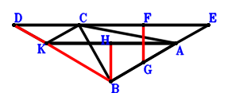
\(\because \) KA//DC and KA=2DC \(\therefore \small\overrightarrow{AD}=\small\overrightarrow{AC} + \dfrac{\small\overrightarrow{AK}}{2}\).\(\because \) CKAE is a parallelogram \(\therefore \small\overrightarrow{AE}=\small\overrightarrow{AC} - \small\overrightarrow{AK}\).\(\because \) F is the midpoint of CE \(\therefore \small\overrightarrow{AF}=\dfrac{\small\overrightarrow{AC}}{2} + \dfrac{\small\overrightarrow{AE}}{2}=\small\overrightarrow{AC} - \dfrac{\small\overrightarrow{AK}}{2}\).\(\because \) G is the midpoint of BA \(\therefore \small\overrightarrow{AG}=\dfrac{\small\overrightarrow{AB}}{2}\).\(\because \) H is the midpoint of KA \(\therefore \small\overrightarrow{AH}=\dfrac{\small\overrightarrow{AK}}{2}\).\(\because \) CB⊥BA \( \therefore\small\overrightarrow{AB} \cdot \small\overrightarrow{CB}=\small\overrightarrow{AB} \cdot \left(\small\overrightarrow{AB} - \small\overrightarrow{AC}\right)=\small\overrightarrow{AB}^{2} - \small\overrightarrow{AB} \cdot \small\overrightarrow{AC}=0.\)In conclusion, \(2 \small\overrightarrow{BH} \cdot \small\overrightarrow{FG} + \small\overrightarrow{BK} \cdot \small\overrightarrow{KD}=2 \left(- \small\overrightarrow{AB} + \small\overrightarrow{AH}\right) \cdot \left(- \small\overrightarrow{AF} + \small\overrightarrow{AG}\right) + \left(- \small\overrightarrow{AB} + \small\overrightarrow{AK}\right) \cdot \left(\small\overrightarrow{AD} - \small\overrightarrow{AK}\right)=2 \left(- \small\overrightarrow{AB} + \dfrac{\small\overrightarrow{AK}}{2}\right) \cdot \left(\dfrac{\small\overrightarrow{AB}}{2} - \small\overrightarrow{AC} + \dfrac{\small\overrightarrow{AK}}{2}\right) + \left(- \small\overrightarrow{AB} + \small\overrightarrow{AK}\right) \cdot \left(\small\overrightarrow{AC} - \dfrac{\small\overrightarrow{AK}}{2}\right)=- \small\overrightarrow{AB}^{2} + \small\overrightarrow{AB} \cdot \small\overrightarrow{AC}=0\)\(\because\) D, K, B are collinear and FG//HB \(\therefore\) \(DK·KB=2·FG·HB\).
Exercise 124： Let DKAC be a trapezoid with KA//DC and KA=2DC. CBGF is a trapezoid with CB//FG and CB=2FG. E, F are the midpoints of CA, KA, respectively. CB⊥BA. Given that D, K, B are collinear and EG//FB, prove that \(DK·KB=2·EG·FB\).
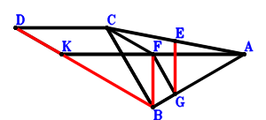
\(\because \) KA//DC and KA=2DC \(\therefore \small\overrightarrow{AD}=\small\overrightarrow{AC} + \dfrac{\small\overrightarrow{AK}}{2}\).\(\because \) E is the midpoint of CA \(\therefore \small\overrightarrow{AE}=\dfrac{\small\overrightarrow{AC}}{2}\).\(\because \) F is the midpoint of KA \(\therefore \small\overrightarrow{AF}=\dfrac{\small\overrightarrow{AK}}{2}\).\(\because \) CB//FG and CB=2FG \(\therefore \small\overrightarrow{AG}=\dfrac{\small\overrightarrow{AB}}{2} - \dfrac{\small\overrightarrow{AC}}{2} + \dfrac{\small\overrightarrow{AK}}{2}\).\(\because \) CB⊥BA \( \therefore\small\overrightarrow{AB} \cdot \small\overrightarrow{CB}=\small\overrightarrow{AB} \cdot \left(\small\overrightarrow{AB} - \small\overrightarrow{AC}\right)=\small\overrightarrow{AB}^{2} - \small\overrightarrow{AB} \cdot \small\overrightarrow{AC}=0.\)In conclusion, \(2 \small\overrightarrow{BF} \cdot \small\overrightarrow{EG} + \small\overrightarrow{BK} \cdot \small\overrightarrow{KD}=2 \left(- \small\overrightarrow{AB} + \small\overrightarrow{AF}\right) \cdot \left(- \small\overrightarrow{AE} + \small\overrightarrow{AG}\right) + \left(- \small\overrightarrow{AB} + \small\overrightarrow{AK}\right) \cdot \left(\small\overrightarrow{AD} - \small\overrightarrow{AK}\right)=2 \left(- \small\overrightarrow{AB} + \dfrac{\small\overrightarrow{AK}}{2}\right) \cdot \left(\dfrac{\small\overrightarrow{AB}}{2} - \small\overrightarrow{AC} + \dfrac{\small\overrightarrow{AK}}{2}\right) + \left(- \small\overrightarrow{AB} + \small\overrightarrow{AK}\right) \cdot \left(\small\overrightarrow{AC} - \dfrac{\small\overrightarrow{AK}}{2}\right)=- \small\overrightarrow{AB}^{2} + \small\overrightarrow{AB} \cdot \small\overrightarrow{AC}=0\)\(\because\) D, K, B are collinear and EG//FB \(\therefore\) \(DK·KB=2·EG·FB\).
Exercise 132： Let DEFA be a trapezoid with FA//ED and FA=2ED. HKAC is a trapezoid with KA//HC and KA=2HC. G, E, D are the midpoints of KA, KB, CA, respectively. CB⊥BA. Given that H, K, B are collinear and CF//GB, prove that \(CF·GB=HK·KB\).
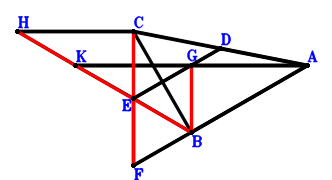
\(\because \) D is the midpoint of CA \(\therefore \small\overrightarrow{AD}=\dfrac{\small\overrightarrow{AC}}{2}\).\(\because \) E is the midpoint of KB \(\therefore \small\overrightarrow{AE}=\dfrac{\small\overrightarrow{AB}}{2} + \dfrac{\small\overrightarrow{AK}}{2}\).\(\because \) FA//ED and FA=2ED \(\therefore \small\overrightarrow{AF}=- \small\overrightarrow{AC} + 2 \small\overrightarrow{AE}=\small\overrightarrow{AB} - \small\overrightarrow{AC} + \small\overrightarrow{AK}\).\(\because \) G is the midpoint of KA \(\therefore \small\overrightarrow{AG}=\dfrac{\small\overrightarrow{AK}}{2}\).\(\because \) KA//HC and KA=2HC \(\therefore \small\overrightarrow{AH}=\small\overrightarrow{AC} + \dfrac{\small\overrightarrow{AK}}{2}\).\(\because \) CB⊥BA \( \therefore\small\overrightarrow{AB} \cdot \small\overrightarrow{CB}=\small\overrightarrow{AB} \cdot \left(\small\overrightarrow{AB} - \small\overrightarrow{AC}\right)=\small\overrightarrow{AB}^{2} - \small\overrightarrow{AB} \cdot \small\overrightarrow{AC}=0.\)In conclusion, \(\small\overrightarrow{BG} \cdot \small\overrightarrow{CF} + \small\overrightarrow{BK} \cdot \small\overrightarrow{KH}=\left(- \small\overrightarrow{AB} + \small\overrightarrow{AG}\right) \cdot \left(- \small\overrightarrow{AC} + \small\overrightarrow{AF}\right) + \left(- \small\overrightarrow{AB} + \small\overrightarrow{AK}\right) \cdot \left(\small\overrightarrow{AH} - \small\overrightarrow{AK}\right)=\left(- \small\overrightarrow{AB} + \dfrac{\small\overrightarrow{AK}}{2}\right) \cdot \left(\small\overrightarrow{AB} - 2 \small\overrightarrow{AC} + \small\overrightarrow{AK}\right) + \left(- \small\overrightarrow{AB} + \small\overrightarrow{AK}\right) \cdot \left(\small\overrightarrow{AC} - \dfrac{\small\overrightarrow{AK}}{2}\right)=- \small\overrightarrow{AB}^{2} + \small\overrightarrow{AB} \cdot \small\overrightarrow{AC}=0\)\(\because\) H, K, B are collinear and CF//GB \(\therefore\) \(CF·GB=HK·KB\).
Exercise 137： Let ECDA be a trapezoid with EA//CD and EA=2CD. GKAC is a trapezoid with KA//GC and KA=2GC. D, F are the midpoints of KB, KA, respectively. CB⊥BA. Given that G, K, B are collinear and EA//FB, prove that \(EA·FB=GK·KB\).
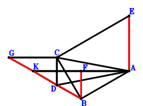
\(\because \) D is the midpoint of KB \(\therefore \small\overrightarrow{AD}=\dfrac{\small\overrightarrow{AB}}{2} + \dfrac{\small\overrightarrow{AK}}{2}\).\(\because \) EA//CD and EA=2CD \(\therefore \small\overrightarrow{AE}=2 \small\overrightarrow{AC} - 2 \small\overrightarrow{AD}=- \small\overrightarrow{AB} + 2 \small\overrightarrow{AC} - \small\overrightarrow{AK}\).\(\because \) F is the midpoint of KA \(\therefore \small\overrightarrow{AF}=\dfrac{\small\overrightarrow{AK}}{2}\).\(\because \) KA//GC and KA=2GC \(\therefore \small\overrightarrow{AG}=\small\overrightarrow{AC} + \dfrac{\small\overrightarrow{AK}}{2}\).\(\because \) CB⊥BA \( \therefore\small\overrightarrow{AB} \cdot \small\overrightarrow{CB}=\small\overrightarrow{AB} \cdot \left(\small\overrightarrow{AB} - \small\overrightarrow{AC}\right)=\small\overrightarrow{AB}^{2} - \small\overrightarrow{AB} \cdot \small\overrightarrow{AC}=0.\)In conclusion, \(\small\overrightarrow{BF} \cdot \small\overrightarrow{EA} + \small\overrightarrow{BK} \cdot \small\overrightarrow{KG}=- \small\overrightarrow{AE} \cdot \left(- \small\overrightarrow{AB} + \small\overrightarrow{AF}\right) + \left(- \small\overrightarrow{AB} + \small\overrightarrow{AK}\right) \cdot \left(\small\overrightarrow{AG} - \small\overrightarrow{AK}\right)=- \left(- \small\overrightarrow{AB} + \dfrac{\small\overrightarrow{AK}}{2}\right) \cdot \left(- \small\overrightarrow{AB} + 2 \small\overrightarrow{AC} - \small\overrightarrow{AK}\right) + \left(- \small\overrightarrow{AB} + \small\overrightarrow{AK}\right) \cdot \left(\small\overrightarrow{AC} - \dfrac{\small\overrightarrow{AK}}{2}\right)=- \small\overrightarrow{AB}^{2} + \small\overrightarrow{AB} \cdot \small\overrightarrow{AC}=0\)\(\because\) G, K, B are collinear and EA//FB \(\therefore\) \(EA·FB=GK·KB\).
Exercise 143： Let CKDB be a parallelogram. ACFK is a trapezoid with KA//FC and KA=2FC. E is the midpoint of KA. CB⊥BA. Given that F, K, B are collinear and CD//EB, prove that \(CD·EB=FK·KB\).
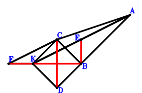
\(\because \) CKDB is a parallelogram \(\therefore \small\overrightarrow{BD}=- \small\overrightarrow{BC} + \small\overrightarrow{BK}\).\(\because \) E is the midpoint of KA \(\therefore \small\overrightarrow{BE}=\dfrac{\small\overrightarrow{BA}}{2} + \dfrac{\small\overrightarrow{BK}}{2}\).\(\because \) KA//FC and KA=2FC \(\therefore \small\overrightarrow{BF}=- \dfrac{\small\overrightarrow{BA}}{2} + \small\overrightarrow{BC} + \dfrac{\small\overrightarrow{BK}}{2}\).\(\because \) CB⊥BA \( \therefore\small\overrightarrow{BA} \cdot \small\overrightarrow{BC}=0.\)In conclusion, \(\small\overrightarrow{BE} \cdot \small\overrightarrow{CD} + \small\overrightarrow{BK} \cdot \small\overrightarrow{KF}=\small\overrightarrow{BE} \cdot \left(- \small\overrightarrow{BC} + \small\overrightarrow{BD}\right) + \small\overrightarrow{BK} \cdot \left(\small\overrightarrow{BF} - \small\overrightarrow{BK}\right)=\small\overrightarrow{BK} \cdot \left(- \dfrac{\small\overrightarrow{BA}}{2} + \small\overrightarrow{BC} - \dfrac{\small\overrightarrow{BK}}{2}\right) + \left(\dfrac{\small\overrightarrow{BA}}{2} + \dfrac{\small\overrightarrow{BK}}{2}\right) \cdot \left(- 2 \small\overrightarrow{BC} + \small\overrightarrow{BK}\right)=- \small\overrightarrow{BA} \cdot \small\overrightarrow{BC}=0\)\(\because\) F, K, B are collinear and CD//EB \(\therefore\) \(CD·EB=FK·KB\).
Exercise 146： Let ACDK be a trapezoid with KA//DC and KA=2DC. F, E are the midpoints of KB, KA, respectively. CB⊥BA. Given that D, K, B are collinear and EB//CF, prove that \(DK·KB=2·CF·EB\).
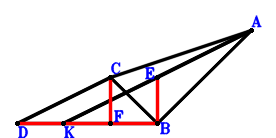
\(\because \) KA//DC and KA=2DC \(\therefore \small\overrightarrow{BD}=- \dfrac{\small\overrightarrow{BA}}{2} + \small\overrightarrow{BC} + \dfrac{\small\overrightarrow{BK}}{2}\).\(\because \) E is the midpoint of KA \(\therefore \small\overrightarrow{BE}=\dfrac{\small\overrightarrow{BA}}{2} + \dfrac{\small\overrightarrow{BK}}{2}\).\(\because \) F is the midpoint of KB \(\therefore \small\overrightarrow{BF}=\dfrac{\small\overrightarrow{BK}}{2}\).\(\because \) CB⊥BA \( \therefore\small\overrightarrow{BA} \cdot \small\overrightarrow{BC}=0.\)In conclusion, \(2 \small\overrightarrow{BE} \cdot \small\overrightarrow{CF} + \small\overrightarrow{BK} \cdot \small\overrightarrow{KD}=2 \small\overrightarrow{BE} \cdot \left(- \small\overrightarrow{BC} + \small\overrightarrow{BF}\right) + \small\overrightarrow{BK} \cdot \left(\small\overrightarrow{BD} - \small\overrightarrow{BK}\right)=\small\overrightarrow{BK} \cdot \left(- \dfrac{\small\overrightarrow{BA}}{2} + \small\overrightarrow{BC} - \dfrac{\small\overrightarrow{BK}}{2}\right) + 2 \left(\dfrac{\small\overrightarrow{BA}}{2} + \dfrac{\small\overrightarrow{BK}}{2}\right) \cdot \left(- \small\overrightarrow{BC} + \dfrac{\small\overrightarrow{BK}}{2}\right)=- \small\overrightarrow{BA} \cdot \small\overrightarrow{BC}=0\)\(\because\) D, K, B are collinear and EB//CF \(\therefore\) \(DK·KB=2·CF·EB\).
Exercise 148： Let CKFA be a parallelogram. DKAC is a trapezoid with KA//DC and KA=2DC. H, E, G are the midpoints of KA, CA, BF, respectively. CB⊥BA. Given that D, K, B are collinear and EG//HB, prove that \(DK·KB=2·EG·HB\).
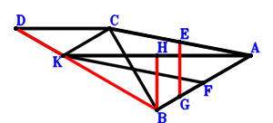
\(\because \) KA//DC and KA=2DC \(\therefore \small\overrightarrow{AD}=\small\overrightarrow{AC} + \dfrac{\small\overrightarrow{AK}}{2}\).\(\because \) E is the midpoint of CA \(\therefore \small\overrightarrow{AE}=\dfrac{\small\overrightarrow{AC}}{2}\).\(\because \) CKFA is a parallelogram \(\therefore \small\overrightarrow{AF}=- \small\overrightarrow{AC} + \small\overrightarrow{AK}\).\(\because \) G is the midpoint of BF \(\therefore \small\overrightarrow{AG}=\dfrac{\small\overrightarrow{AB}}{2} + \dfrac{\small\overrightarrow{AF}}{2}=\dfrac{\small\overrightarrow{AB}}{2} - \dfrac{\small\overrightarrow{AC}}{2} + \dfrac{\small\overrightarrow{AK}}{2}\).\(\because \) H is the midpoint of KA \(\therefore \small\overrightarrow{AH}=\dfrac{\small\overrightarrow{AK}}{2}\).\(\because \) CB⊥BA \( \therefore\small\overrightarrow{AB} \cdot \small\overrightarrow{CB}=\small\overrightarrow{AB} \cdot \left(\small\overrightarrow{AB} - \small\overrightarrow{AC}\right)=\small\overrightarrow{AB}^{2} - \small\overrightarrow{AB} \cdot \small\overrightarrow{AC}=0.\)In conclusion, \(2 \small\overrightarrow{BH} \cdot \small\overrightarrow{EG} + \small\overrightarrow{BK} \cdot \small\overrightarrow{KD}=2 \left(- \small\overrightarrow{AB} + \small\overrightarrow{AH}\right) \cdot \left(- \small\overrightarrow{AE} + \small\overrightarrow{AG}\right) + \left(- \small\overrightarrow{AB} + \small\overrightarrow{AK}\right) \cdot \left(\small\overrightarrow{AD} - \small\overrightarrow{AK}\right)=2 \left(- \small\overrightarrow{AB} + \dfrac{\small\overrightarrow{AK}}{2}\right) \cdot \left(\dfrac{\small\overrightarrow{AB}}{2} - \small\overrightarrow{AC} + \dfrac{\small\overrightarrow{AK}}{2}\right) + \left(- \small\overrightarrow{AB} + \small\overrightarrow{AK}\right) \cdot \left(\small\overrightarrow{AC} - \dfrac{\small\overrightarrow{AK}}{2}\right)=- \small\overrightarrow{AB}^{2} + \small\overrightarrow{AB} \cdot \small\overrightarrow{AC}=0\)\(\because\) D, K, B are collinear and EG//HB \(\therefore\) \(DK·KB=2·EG·HB\).
Exercise 154： Let DKAC be a trapezoid with KA//DC and KA=2DC. F is the centroid of △KBA. C, F, G are collinear and CG=3FG. H, E are the midpoints of KA, CA, respectively. CB⊥BA. Given that D, K, B are collinear and EG//HB, prove that \(DK·KB=2·EG·HB\).
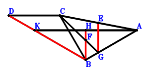
\(\because \) KA//DC and KA=2DC \(\therefore \small\overrightarrow{AD}=\small\overrightarrow{AC} + \dfrac{\small\overrightarrow{AK}}{2}\).\(\because \) E is the midpoint of CA \(\therefore \small\overrightarrow{AE}=\dfrac{\small\overrightarrow{AC}}{2}\).\(\because \) F is the centroid of △KBA \(\therefore \small\overrightarrow{AF}=\dfrac{\small\overrightarrow{AB}}{3} + \dfrac{\small\overrightarrow{AK}}{3}\).\(\because \) C, F, G are collinear and CG=3FG \(\therefore \small\overrightarrow{AG}=- \dfrac{\small\overrightarrow{AC}}{2} + \dfrac{3 \small\overrightarrow{AF}}{2}=\dfrac{\small\overrightarrow{AB}}{2} - \dfrac{\small\overrightarrow{AC}}{2} + \dfrac{\small\overrightarrow{AK}}{2}\).\(\because \) H is the midpoint of KA \(\therefore \small\overrightarrow{AH}=\dfrac{\small\overrightarrow{AK}}{2}\).\(\because \) CB⊥BA \( \therefore\small\overrightarrow{AB} \cdot \small\overrightarrow{CB}=\small\overrightarrow{AB} \cdot \left(\small\overrightarrow{AB} - \small\overrightarrow{AC}\right)=\small\overrightarrow{AB}^{2} - \small\overrightarrow{AB} \cdot \small\overrightarrow{AC}=0.\)In conclusion, \(2 \small\overrightarrow{BH} \cdot \small\overrightarrow{EG} + \small\overrightarrow{BK} \cdot \small\overrightarrow{KD}=2 \left(- \small\overrightarrow{AB} + \small\overrightarrow{AH}\right) \cdot \left(- \small\overrightarrow{AE} + \small\overrightarrow{AG}\right) + \left(- \small\overrightarrow{AB} + \small\overrightarrow{AK}\right) \cdot \left(\small\overrightarrow{AD} - \small\overrightarrow{AK}\right)=2 \left(- \small\overrightarrow{AB} + \dfrac{\small\overrightarrow{AK}}{2}\right) \cdot \left(\dfrac{\small\overrightarrow{AB}}{2} - \small\overrightarrow{AC} + \dfrac{\small\overrightarrow{AK}}{2}\right) + \left(- \small\overrightarrow{AB} + \small\overrightarrow{AK}\right) \cdot \left(\small\overrightarrow{AC} - \dfrac{\small\overrightarrow{AK}}{2}\right)=- \small\overrightarrow{AB}^{2} + \small\overrightarrow{AB} \cdot \small\overrightarrow{AC}=0\)\(\because\) D, K, B are collinear and EG//HB \(\therefore\) \(DK·KB=2·EG·HB\).
Exercise 156： Let KFBA be a parallelogram. DKAC is a trapezoid with KA//DC and KA=2DC. G, E are the midpoints of FA, KA, respectively. CB⊥BA. Given that D, K, B are collinear and EB//CG, prove that \(DK·KB=2·CG·EB\).
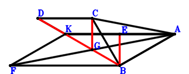
\(\because \) KA//DC and KA=2DC \(\therefore \small\overrightarrow{AD}=\small\overrightarrow{AC} + \dfrac{\small\overrightarrow{AK}}{2}\).\(\because \) E is the midpoint of KA \(\therefore \small\overrightarrow{AE}=\dfrac{\small\overrightarrow{AK}}{2}\).\(\because \) KFBA is a parallelogram \(\therefore \small\overrightarrow{AF}=\small\overrightarrow{AB} + \small\overrightarrow{AK}\).\(\because \) G is the midpoint of FA \(\therefore \small\overrightarrow{AG}=\dfrac{\small\overrightarrow{AF}}{2}=\dfrac{\small\overrightarrow{AB}}{2} + \dfrac{\small\overrightarrow{AK}}{2}\).\(\because \) CB⊥BA \( \therefore\small\overrightarrow{AB} \cdot \small\overrightarrow{CB}=\small\overrightarrow{AB} \cdot \left(\small\overrightarrow{AB} - \small\overrightarrow{AC}\right)=\small\overrightarrow{AB}^{2} - \small\overrightarrow{AB} \cdot \small\overrightarrow{AC}=0.\)In conclusion, \(2 \small\overrightarrow{BE} \cdot \small\overrightarrow{CG} + \small\overrightarrow{BK} \cdot \small\overrightarrow{KD}=2 \left(- \small\overrightarrow{AB} + \small\overrightarrow{AE}\right) \cdot \left(- \small\overrightarrow{AC} + \small\overrightarrow{AG}\right) + \left(- \small\overrightarrow{AB} + \small\overrightarrow{AK}\right) \cdot \left(\small\overrightarrow{AD} - \small\overrightarrow{AK}\right)=2 \left(- \small\overrightarrow{AB} + \dfrac{\small\overrightarrow{AK}}{2}\right) \cdot \left(\dfrac{\small\overrightarrow{AB}}{2} - \small\overrightarrow{AC} + \dfrac{\small\overrightarrow{AK}}{2}\right) + \left(- \small\overrightarrow{AB} + \small\overrightarrow{AK}\right) \cdot \left(\small\overrightarrow{AC} - \dfrac{\small\overrightarrow{AK}}{2}\right)=- \small\overrightarrow{AB}^{2} + \small\overrightarrow{AB} \cdot \small\overrightarrow{AC}=0\)\(\because\) D, K, B are collinear and EB//CG \(\therefore\) \(DK·KB=2·CG·EB\).
Exercise 183： Let EAFB and EAKC be parallelograms. CAKD is a trapezoid with AK//CD and AK=2CD. G is the midpoint of AK. BK⊥KD. Given that A, B, C are collinear and CF//BG, prove that \(BG·CF=AB·BC\).
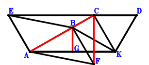
\(\because \) AK//CD and AK=2CD \(\therefore \small\overrightarrow{KD}=- \dfrac{\small\overrightarrow{KA}}{2} + \small\overrightarrow{KC}\).\(\because \) EAKC is a parallelogram \(\therefore \small\overrightarrow{KE}=\small\overrightarrow{KA} + \small\overrightarrow{KC}\).\(\because \) EAFB is a parallelogram \(\therefore \small\overrightarrow{KF}=\small\overrightarrow{KA} + \small\overrightarrow{KB} - \small\overrightarrow{KE}=\small\overrightarrow{KB} - \small\overrightarrow{KC}\).\(\because \) G is the midpoint of AK \(\therefore \small\overrightarrow{KG}=\dfrac{\small\overrightarrow{KA}}{2}\).\(\because \) BK⊥KD \( \therefore- \small\overrightarrow{KB} \cdot \small\overrightarrow{KD}=- \small\overrightarrow{KB} \cdot \left(- \dfrac{\small\overrightarrow{KA}}{2} + \small\overrightarrow{KC}\right)=\dfrac{\small\overrightarrow{KA} \cdot \small\overrightarrow{KB}}{2} - \small\overrightarrow{KB} \cdot \small\overrightarrow{KC}=0.\)In conclusion, \(\small\overrightarrow{AB} \cdot \small\overrightarrow{CB} + \small\overrightarrow{BG} \cdot \small\overrightarrow{CF}=\left(- \small\overrightarrow{KA} + \small\overrightarrow{KB}\right) \cdot \left(\small\overrightarrow{KB} - \small\overrightarrow{KC}\right) + \left(- \small\overrightarrow{KB} + \small\overrightarrow{KG}\right) \cdot \left(- \small\overrightarrow{KC} + \small\overrightarrow{KF}\right)=\left(- \small\overrightarrow{KA} + \small\overrightarrow{KB}\right) \cdot \left(\small\overrightarrow{KB} - \small\overrightarrow{KC}\right) + \left(\dfrac{\small\overrightarrow{KA}}{2} - \small\overrightarrow{KB}\right) \cdot \left(\small\overrightarrow{KB} - 2 \small\overrightarrow{KC}\right)=- \dfrac{\small\overrightarrow{KA} \cdot \small\overrightarrow{KB}}{2} + \small\overrightarrow{KB} \cdot \small\overrightarrow{KC}=0\)\(\because\) A, B, C are collinear and CF//BG \(\therefore\) \(BG·CF=AB·BC\).
Exercise 206： Let ACKD be a trapezoid with AD//CK and AD=2CK. AECK is a trapezoid with AK//EC and AK=2EC. F, G are the midpoints of AB, AK, respectively. BK⊥KD. Given that A, B, C are collinear and EF//BG, prove that \(AB·BC=2·BG·EF\).
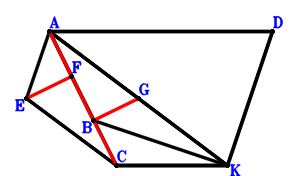
\(\because \) AD//CK and AD=2CK \(\therefore \small\overrightarrow{KD}=\small\overrightarrow{KA} - 2 \small\overrightarrow{KC}\).\(\because \) AK//EC and AK=2EC \(\therefore \small\overrightarrow{KE}=\dfrac{\small\overrightarrow{KA}}{2} + \small\overrightarrow{KC}\).\(\because \) F is the midpoint of AB \(\therefore \small\overrightarrow{KF}=\dfrac{\small\overrightarrow{KA}}{2} + \dfrac{\small\overrightarrow{KB}}{2}\).\(\because \) G is the midpoint of AK \(\therefore \small\overrightarrow{KG}=\dfrac{\small\overrightarrow{KA}}{2}\).\(\because \) BK⊥KD \( \therefore\small\overrightarrow{KB} \cdot \small\overrightarrow{KD}=\small\overrightarrow{KB} \cdot \left(\small\overrightarrow{KA} - 2 \small\overrightarrow{KC}\right)=\small\overrightarrow{KA} \cdot \small\overrightarrow{KB} - 2 \small\overrightarrow{KB} \cdot \small\overrightarrow{KC}=0.\)In conclusion, \(\small\overrightarrow{AB} \cdot \small\overrightarrow{CB} + 2 \small\overrightarrow{BG} \cdot \small\overrightarrow{EF}=\left(- \small\overrightarrow{KA} + \small\overrightarrow{KB}\right) \cdot \left(\small\overrightarrow{KB} - \small\overrightarrow{KC}\right) + 2 \left(- \small\overrightarrow{KB} + \small\overrightarrow{KG}\right) \cdot \left(- \small\overrightarrow{KE} + \small\overrightarrow{KF}\right)=\left(- \small\overrightarrow{KA} + \small\overrightarrow{KB}\right) \cdot \left(\small\overrightarrow{KB} - \small\overrightarrow{KC}\right) + 2 \left(\dfrac{\small\overrightarrow{KA}}{2} - \small\overrightarrow{KB}\right) \cdot \left(\dfrac{\small\overrightarrow{KB}}{2} - \small\overrightarrow{KC}\right)=- \dfrac{\small\overrightarrow{KA} \cdot \small\overrightarrow{KB}}{2} + \small\overrightarrow{KB} \cdot \small\overrightarrow{KC}=0\)\(\because\) A, B, C are collinear and EF//BG \(\therefore\) \(AB·BC=2·BG·EF\).
Exercise 210： Let EAKC be a parallelogram. CAKD is a trapezoid with AK//CD and AK=2CD. G, F, H are the midpoints of AB, EC, AK, respectively. BK⊥KD. Given that A, B, C are collinear and FG//BH, prove that \(AB·BC=2·BH·FG\).
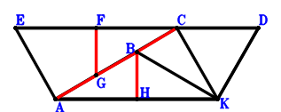
\(\because \) AK//CD and AK=2CD \(\therefore \small\overrightarrow{KD}=- \dfrac{\small\overrightarrow{KA}}{2} + \small\overrightarrow{KC}\).\(\because \) EAKC is a parallelogram \(\therefore \small\overrightarrow{KE}=\small\overrightarrow{KA} + \small\overrightarrow{KC}\).\(\because \) F is the midpoint of EC \(\therefore \small\overrightarrow{KF}=\dfrac{\small\overrightarrow{KC}}{2} + \dfrac{\small\overrightarrow{KE}}{2}=\dfrac{\small\overrightarrow{KA}}{2} + \small\overrightarrow{KC}\).\(\because \) G is the midpoint of AB \(\therefore \small\overrightarrow{KG}=\dfrac{\small\overrightarrow{KA}}{2} + \dfrac{\small\overrightarrow{KB}}{2}\).\(\because \) H is the midpoint of AK \(\therefore \small\overrightarrow{KH}=\dfrac{\small\overrightarrow{KA}}{2}\).\(\because \) BK⊥KD \( \therefore- \small\overrightarrow{KB} \cdot \small\overrightarrow{KD}=- \small\overrightarrow{KB} \cdot \left(- \dfrac{\small\overrightarrow{KA}}{2} + \small\overrightarrow{KC}\right)=\dfrac{\small\overrightarrow{KA} \cdot \small\overrightarrow{KB}}{2} - \small\overrightarrow{KB} \cdot \small\overrightarrow{KC}=0.\)In conclusion, \(\small\overrightarrow{AB} \cdot \small\overrightarrow{CB} + 2 \small\overrightarrow{BH} \cdot \small\overrightarrow{FG}=\left(- \small\overrightarrow{KA} + \small\overrightarrow{KB}\right) \cdot \left(\small\overrightarrow{KB} - \small\overrightarrow{KC}\right) + 2 \left(- \small\overrightarrow{KB} + \small\overrightarrow{KH}\right) \cdot \left(- \small\overrightarrow{KF} + \small\overrightarrow{KG}\right)=\left(- \small\overrightarrow{KA} + \small\overrightarrow{KB}\right) \cdot \left(\small\overrightarrow{KB} - \small\overrightarrow{KC}\right) + 2 \left(\dfrac{\small\overrightarrow{KA}}{2} - \small\overrightarrow{KB}\right) \cdot \left(\dfrac{\small\overrightarrow{KB}}{2} - \small\overrightarrow{KC}\right)=- \dfrac{\small\overrightarrow{KA} \cdot \small\overrightarrow{KB}}{2} + \small\overrightarrow{KB} \cdot \small\overrightarrow{KC}=0\)\(\because\) A, B, C are collinear and FG//BH \(\therefore\) \(AB·BC=2·BH·FG\).
Exercise 212： Let ACKD be a trapezoid with AD//CK and AD=2CK. FCKE is a trapezoid with CK//FE and CK=2FE. E, G, H are the midpoints of CA, BA, AK, respectively. BK⊥KD. Given that C, B, A are collinear and FG//BH, prove that \(BA·CB=2·BH·FG\).
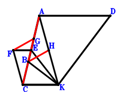
\(\because \) AD//CK and AD=2CK \(\therefore \small\overrightarrow{KD}=\small\overrightarrow{KA} - 2 \small\overrightarrow{KC}\).\(\because \) E is the midpoint of CA \(\therefore \small\overrightarrow{KE}=\dfrac{\small\overrightarrow{KA}}{2} + \dfrac{\small\overrightarrow{KC}}{2}\).\(\because \) CK//FE and CK=2FE \(\therefore \small\overrightarrow{KF}=\dfrac{\small\overrightarrow{KA}}{2} + \small\overrightarrow{KC}\).\(\because \) G is the midpoint of BA \(\therefore \small\overrightarrow{KG}=\dfrac{\small\overrightarrow{KA}}{2} + \dfrac{\small\overrightarrow{KB}}{2}\).\(\because \) H is the midpoint of AK \(\therefore \small\overrightarrow{KH}=\dfrac{\small\overrightarrow{KA}}{2}\).\(\because \) BK⊥KD \( \therefore\small\overrightarrow{KB} \cdot \small\overrightarrow{KD}=\small\overrightarrow{KB} \cdot \left(\small\overrightarrow{KA} - 2 \small\overrightarrow{KC}\right)=\small\overrightarrow{KA} \cdot \small\overrightarrow{KB} - 2 \small\overrightarrow{KB} \cdot \small\overrightarrow{KC}=0.\)In conclusion, \(\small\overrightarrow{AB} \cdot \small\overrightarrow{CB} + 2 \small\overrightarrow{BH} \cdot \small\overrightarrow{FG}=\left(- \small\overrightarrow{KA} + \small\overrightarrow{KB}\right) \cdot \left(\small\overrightarrow{KB} - \small\overrightarrow{KC}\right) + 2 \left(- \small\overrightarrow{KB} + \small\overrightarrow{KH}\right) \cdot \left(- \small\overrightarrow{KF} + \small\overrightarrow{KG}\right)=\left(- \small\overrightarrow{KA} + \small\overrightarrow{KB}\right) \cdot \left(\small\overrightarrow{KB} - \small\overrightarrow{KC}\right) + 2 \left(\dfrac{\small\overrightarrow{KA}}{2} - \small\overrightarrow{KB}\right) \cdot \left(\dfrac{\small\overrightarrow{KB}}{2} - \small\overrightarrow{KC}\right)=- \dfrac{\small\overrightarrow{KA} \cdot \small\overrightarrow{KB}}{2} + \small\overrightarrow{KB} \cdot \small\overrightarrow{KC}=0\)\(\because\) C, B, A are collinear and FG//BH \(\therefore\) \(BA·CB=2·BH·FG\).
Exercise 230： Let ACKD be a trapezoid with AD//CK and AD=2CK. GBCF is a trapezoid with BC//GF and BC=2GF. E, F are the midpoints of AC, AK, respectively. BK⊥KD. Given that A, B, C are collinear and EG//BF, prove that \(AB·BC=2·BF·EG\).
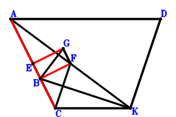
\(\because \) AD//CK and AD=2CK \(\therefore \small\overrightarrow{KD}=\small\overrightarrow{KA} - 2 \small\overrightarrow{KC}\).\(\because \) E is the midpoint of AC \(\therefore \small\overrightarrow{KE}=\dfrac{\small\overrightarrow{KA}}{2} + \dfrac{\small\overrightarrow{KC}}{2}\).\(\because \) F is the midpoint of AK \(\therefore \small\overrightarrow{KF}=\dfrac{\small\overrightarrow{KA}}{2}\).\(\because \) BC//GF and BC=2GF \(\therefore \small\overrightarrow{KG}=\dfrac{\small\overrightarrow{KA}}{2} + \dfrac{\small\overrightarrow{KB}}{2} - \dfrac{\small\overrightarrow{KC}}{2}\).\(\because \) BK⊥KD \( \therefore\small\overrightarrow{KB} \cdot \small\overrightarrow{KD}=\small\overrightarrow{KB} \cdot \left(\small\overrightarrow{KA} - 2 \small\overrightarrow{KC}\right)=\small\overrightarrow{KA} \cdot \small\overrightarrow{KB} - 2 \small\overrightarrow{KB} \cdot \small\overrightarrow{KC}=0.\)In conclusion, \(\small\overrightarrow{AB} \cdot \small\overrightarrow{CB} + 2 \small\overrightarrow{BF} \cdot \small\overrightarrow{EG}=\left(- \small\overrightarrow{KA} + \small\overrightarrow{KB}\right) \cdot \left(\small\overrightarrow{KB} - \small\overrightarrow{KC}\right) + 2 \left(- \small\overrightarrow{KB} + \small\overrightarrow{KF}\right) \cdot \left(- \small\overrightarrow{KE} + \small\overrightarrow{KG}\right)=\left(- \small\overrightarrow{KA} + \small\overrightarrow{KB}\right) \cdot \left(\small\overrightarrow{KB} - \small\overrightarrow{KC}\right) + 2 \left(\dfrac{\small\overrightarrow{KA}}{2} - \small\overrightarrow{KB}\right) \cdot \left(\dfrac{\small\overrightarrow{KB}}{2} - \small\overrightarrow{KC}\right)=- \dfrac{\small\overrightarrow{KA} \cdot \small\overrightarrow{KB}}{2} + \small\overrightarrow{KB} \cdot \small\overrightarrow{KC}=0\)\(\because\) A, B, C are collinear and EG//BF \(\therefore\) \(AB·BC=2·BF·EG\).
Exercise 245： Let ACKD be a trapezoid with AD//CK and AD=2CK. FECK is a trapezoid with FK//EC and FK=2EC. E, G are the midpoints of AB, AK, respectively. BK⊥KD. Given that A, B, C are collinear and AF//BG, prove that \(AF·BG=AB·BC\).
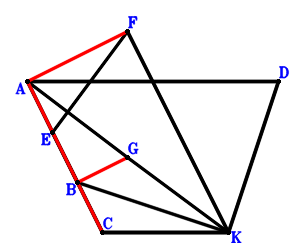
\(\because \) AD//CK and AD=2CK \(\therefore \small\overrightarrow{KD}=\small\overrightarrow{KA} - 2 \small\overrightarrow{KC}\).\(\because \) E is the midpoint of AB \(\therefore \small\overrightarrow{KE}=\dfrac{\small\overrightarrow{KA}}{2} + \dfrac{\small\overrightarrow{KB}}{2}\).\(\because \) FK//EC and FK=2EC \(\therefore \small\overrightarrow{KF}=- 2 \small\overrightarrow{KC} + 2 \small\overrightarrow{KE}=\small\overrightarrow{KA} + \small\overrightarrow{KB} - 2 \small\overrightarrow{KC}\).\(\because \) G is the midpoint of AK \(\therefore \small\overrightarrow{KG}=\dfrac{\small\overrightarrow{KA}}{2}\).\(\because \) BK⊥KD \( \therefore\small\overrightarrow{KB} \cdot \small\overrightarrow{KD}=\small\overrightarrow{KB} \cdot \left(\small\overrightarrow{KA} - 2 \small\overrightarrow{KC}\right)=\small\overrightarrow{KA} \cdot \small\overrightarrow{KB} - 2 \small\overrightarrow{KB} \cdot \small\overrightarrow{KC}=0.\)In conclusion, \(\small\overrightarrow{AB} \cdot \small\overrightarrow{CB} + \small\overrightarrow{AF} \cdot \small\overrightarrow{BG}=\left(- \small\overrightarrow{KA} + \small\overrightarrow{KB}\right) \cdot \left(\small\overrightarrow{KB} - \small\overrightarrow{KC}\right) + \left(- \small\overrightarrow{KA} + \small\overrightarrow{KF}\right) \cdot \left(- \small\overrightarrow{KB} + \small\overrightarrow{KG}\right)=\left(- \small\overrightarrow{KA} + \small\overrightarrow{KB}\right) \cdot \left(\small\overrightarrow{KB} - \small\overrightarrow{KC}\right) + \left(\dfrac{\small\overrightarrow{KA}}{2} - \small\overrightarrow{KB}\right) \cdot \left(\small\overrightarrow{KB} - 2 \small\overrightarrow{KC}\right)=- \dfrac{\small\overrightarrow{KA} \cdot \small\overrightarrow{KB}}{2} + \small\overrightarrow{KB} \cdot \small\overrightarrow{KC}=0\)\(\because\) A, B, C are collinear and AF//BG \(\therefore\) \(AF·BG=AB·BC\).
Exercise 254： Let CBEK be a parallelogram. CADK is a trapezoid with AD//CK and AD=2CK. F is the midpoint of AK. BK⊥KD. Given that C, B, A are collinear and CE//BF, prove that \(BF·CE=BA·CB\).
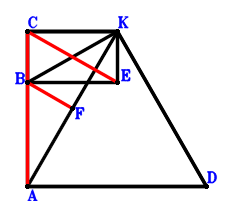
\(\because \) AD//CK and AD=2CK \(\therefore \small\overrightarrow{KD}=\small\overrightarrow{KA} - 2 \small\overrightarrow{KC}\).\(\because \) CBEK is a parallelogram \(\therefore \small\overrightarrow{KE}=\small\overrightarrow{KB} - \small\overrightarrow{KC}\).\(\because \) F is the midpoint of AK \(\therefore \small\overrightarrow{KF}=\dfrac{\small\overrightarrow{KA}}{2}\).\(\because \) BK⊥KD \( \therefore\small\overrightarrow{KB} \cdot \small\overrightarrow{KD}=\small\overrightarrow{KB} \cdot \left(\small\overrightarrow{KA} - 2 \small\overrightarrow{KC}\right)=\small\overrightarrow{KA} \cdot \small\overrightarrow{KB} - 2 \small\overrightarrow{KB} \cdot \small\overrightarrow{KC}=0.\)In conclusion, \(\small\overrightarrow{AB} \cdot \small\overrightarrow{CB} + \small\overrightarrow{BF} \cdot \small\overrightarrow{CE}=\left(- \small\overrightarrow{KA} + \small\overrightarrow{KB}\right) \cdot \left(\small\overrightarrow{KB} - \small\overrightarrow{KC}\right) + \left(- \small\overrightarrow{KB} + \small\overrightarrow{KF}\right) \cdot \left(- \small\overrightarrow{KC} + \small\overrightarrow{KE}\right)=\left(- \small\overrightarrow{KA} + \small\overrightarrow{KB}\right) \cdot \left(\small\overrightarrow{KB} - \small\overrightarrow{KC}\right) + \left(\dfrac{\small\overrightarrow{KA}}{2} - \small\overrightarrow{KB}\right) \cdot \left(\small\overrightarrow{KB} - 2 \small\overrightarrow{KC}\right)=- \dfrac{\small\overrightarrow{KA} \cdot \small\overrightarrow{KB}}{2} + \small\overrightarrow{KB} \cdot \small\overrightarrow{KC}=0\)\(\because\) C, B, A are collinear and CE//BF \(\therefore\) \(BF·CE=BA·CB\).
Exercise 257： Let ACKD be a trapezoid with AD//CK and AD=2CK. E, F are the midpoints of AK, BK, respectively. BK⊥KD. Given that C, B, A are collinear and BE//CF, prove that \(BA·CB=2·BE·CF\).
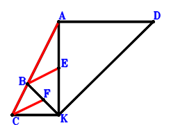
\(\because \) AD//CK and AD=2CK \(\therefore \small\overrightarrow{KD}=\small\overrightarrow{KA} - 2 \small\overrightarrow{KC}\).\(\because \) E is the midpoint of AK \(\therefore \small\overrightarrow{KE}=\dfrac{\small\overrightarrow{KA}}{2}\).\(\because \) F is the midpoint of BK \(\therefore \small\overrightarrow{KF}=\dfrac{\small\overrightarrow{KB}}{2}\).\(\because \) BK⊥KD \( \therefore\small\overrightarrow{KB} \cdot \small\overrightarrow{KD}=\small\overrightarrow{KB} \cdot \left(\small\overrightarrow{KA} - 2 \small\overrightarrow{KC}\right)=\small\overrightarrow{KA} \cdot \small\overrightarrow{KB} - 2 \small\overrightarrow{KB} \cdot \small\overrightarrow{KC}=0.\)In conclusion, \(\small\overrightarrow{AB} \cdot \small\overrightarrow{CB} + 2 \small\overrightarrow{BE} \cdot \small\overrightarrow{CF}=\left(- \small\overrightarrow{KA} + \small\overrightarrow{KB}\right) \cdot \left(\small\overrightarrow{KB} - \small\overrightarrow{KC}\right) + 2 \left(- \small\overrightarrow{KB} + \small\overrightarrow{KE}\right) \cdot \left(- \small\overrightarrow{KC} + \small\overrightarrow{KF}\right)=\left(- \small\overrightarrow{KA} + \small\overrightarrow{KB}\right) \cdot \left(\small\overrightarrow{KB} - \small\overrightarrow{KC}\right) + 2 \left(\dfrac{\small\overrightarrow{KA}}{2} - \small\overrightarrow{KB}\right) \cdot \left(\dfrac{\small\overrightarrow{KB}}{2} - \small\overrightarrow{KC}\right)=- \dfrac{\small\overrightarrow{KA} \cdot \small\overrightarrow{KB}}{2} + \small\overrightarrow{KB} \cdot \small\overrightarrow{KC}=0\)\(\because\) C, B, A are collinear and BE//CF \(\therefore\) \(BA·CB=2·BE·CF\).
Exercise 267： Let CBFK be a parallelogram. CAKD is a trapezoid with AK//CD and AK=2CD. E, G, H are the midpoints of AC, AF, AK, respectively. BK⊥KD. Given that A, B, C are collinear and EG//BH, prove that \(AB·BC=2·BH·EG\).
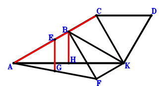
\(\because \) AK//CD and AK=2CD \(\therefore \small\overrightarrow{KD}=- \dfrac{\small\overrightarrow{KA}}{2} + \small\overrightarrow{KC}\).\(\because \) E is the midpoint of AC \(\therefore \small\overrightarrow{KE}=\dfrac{\small\overrightarrow{KA}}{2} + \dfrac{\small\overrightarrow{KC}}{2}\).\(\because \) CBFK is a parallelogram \(\therefore \small\overrightarrow{KF}=\small\overrightarrow{KB} - \small\overrightarrow{KC}\).\(\because \) G is the midpoint of AF \(\therefore \small\overrightarrow{KG}=\dfrac{\small\overrightarrow{KA}}{2} + \dfrac{\small\overrightarrow{KF}}{2}=\dfrac{\small\overrightarrow{KA}}{2} + \dfrac{\small\overrightarrow{KB}}{2} - \dfrac{\small\overrightarrow{KC}}{2}\).\(\because \) H is the midpoint of AK \(\therefore \small\overrightarrow{KH}=\dfrac{\small\overrightarrow{KA}}{2}\).\(\because \) BK⊥KD \( \therefore- \small\overrightarrow{KB} \cdot \small\overrightarrow{KD}=- \small\overrightarrow{KB} \cdot \left(- \dfrac{\small\overrightarrow{KA}}{2} + \small\overrightarrow{KC}\right)=\dfrac{\small\overrightarrow{KA} \cdot \small\overrightarrow{KB}}{2} - \small\overrightarrow{KB} \cdot \small\overrightarrow{KC}=0.\)In conclusion, \(\small\overrightarrow{AB} \cdot \small\overrightarrow{CB} + 2 \small\overrightarrow{BH} \cdot \small\overrightarrow{EG}=\left(- \small\overrightarrow{KA} + \small\overrightarrow{KB}\right) \cdot \left(\small\overrightarrow{KB} - \small\overrightarrow{KC}\right) + 2 \left(- \small\overrightarrow{KB} + \small\overrightarrow{KH}\right) \cdot \left(- \small\overrightarrow{KE} + \small\overrightarrow{KG}\right)=\left(- \small\overrightarrow{KA} + \small\overrightarrow{KB}\right) \cdot \left(\small\overrightarrow{KB} - \small\overrightarrow{KC}\right) + 2 \left(\dfrac{\small\overrightarrow{KA}}{2} - \small\overrightarrow{KB}\right) \cdot \left(\dfrac{\small\overrightarrow{KB}}{2} - \small\overrightarrow{KC}\right)=- \dfrac{\small\overrightarrow{KA} \cdot \small\overrightarrow{KB}}{2} + \small\overrightarrow{KB} \cdot \small\overrightarrow{KC}=0\)\(\because\) A, B, C are collinear and EG//BH \(\therefore\) \(AB·BC=2·BH·EG\).
Exercise 270： Let CAKD be a trapezoid with AK//CD and AK=2CD. F is the centroid of △BAK. G, F, C are collinear and GC=3GF. E, H are the midpoints of AC, AK, respectively. BK⊥KD. Given that A, B, C are collinear and EG//BH, prove that \(AB·BC=2·BH·EG\).
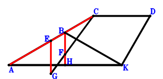
\(\because \) AK//CD and AK=2CD \(\therefore \small\overrightarrow{KD}=- \dfrac{\small\overrightarrow{KA}}{2} + \small\overrightarrow{KC}\).\(\because \) E is the midpoint of AC \(\therefore \small\overrightarrow{KE}=\dfrac{\small\overrightarrow{KA}}{2} + \dfrac{\small\overrightarrow{KC}}{2}\).\(\because \) F is the centroid of △BAK \(\therefore \small\overrightarrow{KF}=\dfrac{\small\overrightarrow{KA}}{3} + \dfrac{\small\overrightarrow{KB}}{3}\).\(\because \) G, F, C are collinear and GC=3GF \(\therefore \small\overrightarrow{KG}=- \dfrac{\small\overrightarrow{KC}}{2} + \dfrac{3 \small\overrightarrow{KF}}{2}=\dfrac{\small\overrightarrow{KA}}{2} + \dfrac{\small\overrightarrow{KB}}{2} - \dfrac{\small\overrightarrow{KC}}{2}\).\(\because \) H is the midpoint of AK \(\therefore \small\overrightarrow{KH}=\dfrac{\small\overrightarrow{KA}}{2}\).\(\because \) BK⊥KD \( \therefore- \small\overrightarrow{KB} \cdot \small\overrightarrow{KD}=- \small\overrightarrow{KB} \cdot \left(- \dfrac{\small\overrightarrow{KA}}{2} + \small\overrightarrow{KC}\right)=\dfrac{\small\overrightarrow{KA} \cdot \small\overrightarrow{KB}}{2} - \small\overrightarrow{KB} \cdot \small\overrightarrow{KC}=0.\)In conclusion, \(\small\overrightarrow{AB} \cdot \small\overrightarrow{CB} + 2 \small\overrightarrow{BH} \cdot \small\overrightarrow{EG}=\left(- \small\overrightarrow{KA} + \small\overrightarrow{KB}\right) \cdot \left(\small\overrightarrow{KB} - \small\overrightarrow{KC}\right) + 2 \left(- \small\overrightarrow{KB} + \small\overrightarrow{KH}\right) \cdot \left(- \small\overrightarrow{KE} + \small\overrightarrow{KG}\right)=\left(- \small\overrightarrow{KA} + \small\overrightarrow{KB}\right) \cdot \left(\small\overrightarrow{KB} - \small\overrightarrow{KC}\right) + 2 \left(\dfrac{\small\overrightarrow{KA}}{2} - \small\overrightarrow{KB}\right) \cdot \left(\dfrac{\small\overrightarrow{KB}}{2} - \small\overrightarrow{KC}\right)=- \dfrac{\small\overrightarrow{KA} \cdot \small\overrightarrow{KB}}{2} + \small\overrightarrow{KB} \cdot \small\overrightarrow{KC}=0\)\(\because\) A, B, C are collinear and EG//BH \(\therefore\) \(AB·BC=2·BH·EG\).
Exercise 273： Let BAKF be a parallelogram. CAKD is a trapezoid with AK//CD and AK=2CD. G, E are the midpoints of AF, AK, respectively. BK⊥KD. Given that A, B, C are collinear and BE//CG, prove that \(AB·BC=2·BE·CG\).
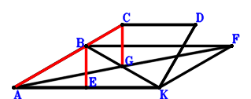
\(\because \) AK//CD and AK=2CD \(\therefore \small\overrightarrow{KD}=- \dfrac{\small\overrightarrow{KA}}{2} + \small\overrightarrow{KC}\).\(\because \) E is the midpoint of AK \(\therefore \small\overrightarrow{KE}=\dfrac{\small\overrightarrow{KA}}{2}\).\(\because \) BAKF is a parallelogram \(\therefore \small\overrightarrow{KF}=- \small\overrightarrow{KA} + \small\overrightarrow{KB}\).\(\because \) G is the midpoint of AF \(\therefore \small\overrightarrow{KG}=\dfrac{\small\overrightarrow{KA}}{2} + \dfrac{\small\overrightarrow{KF}}{2}=\dfrac{\small\overrightarrow{KB}}{2}\).\(\because \) BK⊥KD \( \therefore- \small\overrightarrow{KB} \cdot \small\overrightarrow{KD}=- \small\overrightarrow{KB} \cdot \left(- \dfrac{\small\overrightarrow{KA}}{2} + \small\overrightarrow{KC}\right)=\dfrac{\small\overrightarrow{KA} \cdot \small\overrightarrow{KB}}{2} - \small\overrightarrow{KB} \cdot \small\overrightarrow{KC}=0.\)In conclusion, \(\small\overrightarrow{AB} \cdot \small\overrightarrow{CB} + 2 \small\overrightarrow{BE} \cdot \small\overrightarrow{CG}=\left(- \small\overrightarrow{KA} + \small\overrightarrow{KB}\right) \cdot \left(\small\overrightarrow{KB} - \small\overrightarrow{KC}\right) + 2 \left(- \small\overrightarrow{KB} + \small\overrightarrow{KE}\right) \cdot \left(- \small\overrightarrow{KC} + \small\overrightarrow{KG}\right)=\left(- \small\overrightarrow{KA} + \small\overrightarrow{KB}\right) \cdot \left(\small\overrightarrow{KB} - \small\overrightarrow{KC}\right) + 2 \left(\dfrac{\small\overrightarrow{KA}}{2} - \small\overrightarrow{KB}\right) \cdot \left(\dfrac{\small\overrightarrow{KB}}{2} - \small\overrightarrow{KC}\right)=- \dfrac{\small\overrightarrow{KA} \cdot \small\overrightarrow{KB}}{2} + \small\overrightarrow{KB} \cdot \small\overrightarrow{KC}=0\)\(\because\) A, B, C are collinear and BE//CG \(\therefore\) \(AB·BC=2·BE·CG\).
Exercise 275： Let ACKD be a trapezoid with AD//CK and AD=2CK. F is the centroid of △ABK. A, F, G are collinear and AG=3FG. E is the midpoint of AK. BK⊥KD. Given that A, B, C are collinear and BE//CG, prove that \(AB·BC=2·BE·CG\).
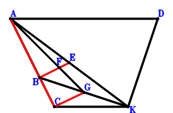
\(\because \) AD//CK and AD=2CK \(\therefore \small\overrightarrow{KD}=\small\overrightarrow{KA} - 2 \small\overrightarrow{KC}\).\(\because \) E is the midpoint of AK \(\therefore \small\overrightarrow{KE}=\dfrac{\small\overrightarrow{KA}}{2}\).\(\because \) F is the centroid of △ABK \(\therefore \small\overrightarrow{KF}=\dfrac{\small\overrightarrow{KA}}{3} + \dfrac{\small\overrightarrow{KB}}{3}\).\(\because \) A, F, G are collinear and AG=3FG \(\therefore \small\overrightarrow{KG}=- \dfrac{\small\overrightarrow{KA}}{2} + \dfrac{3 \small\overrightarrow{KF}}{2}=\dfrac{\small\overrightarrow{KB}}{2}\).\(\because \) BK⊥KD \( \therefore\small\overrightarrow{KB} \cdot \small\overrightarrow{KD}=\small\overrightarrow{KB} \cdot \left(\small\overrightarrow{KA} - 2 \small\overrightarrow{KC}\right)=\small\overrightarrow{KA} \cdot \small\overrightarrow{KB} - 2 \small\overrightarrow{KB} \cdot \small\overrightarrow{KC}=0.\)In conclusion, \(\small\overrightarrow{AB} \cdot \small\overrightarrow{CB} + 2 \small\overrightarrow{BE} \cdot \small\overrightarrow{CG}=\left(- \small\overrightarrow{KA} + \small\overrightarrow{KB}\right) \cdot \left(\small\overrightarrow{KB} - \small\overrightarrow{KC}\right) + 2 \left(- \small\overrightarrow{KB} + \small\overrightarrow{KE}\right) \cdot \left(- \small\overrightarrow{KC} + \small\overrightarrow{KG}\right)=\left(- \small\overrightarrow{KA} + \small\overrightarrow{KB}\right) \cdot \left(\small\overrightarrow{KB} - \small\overrightarrow{KC}\right) + 2 \left(\dfrac{\small\overrightarrow{KA}}{2} - \small\overrightarrow{KB}\right) \cdot \left(\dfrac{\small\overrightarrow{KB}}{2} - \small\overrightarrow{KC}\right)=- \dfrac{\small\overrightarrow{KA} \cdot \small\overrightarrow{KB}}{2} + \small\overrightarrow{KB} \cdot \small\overrightarrow{KC}=0\)\(\because\) A, B, C are collinear and BE//CG \(\therefore\) \(AB·BC=2·BE·CG\).
Exercise 361： Let BCAE and EFKA be parallelograms. CKDA is a trapezoid with AD//CK and AD=2CK. G is the midpoint of KA. BK⊥KD and CB⊥BA. Prove that CF⊥BG.
Exercise 374： Let ECKA be a parallelogram. CKDA is a trapezoid with AD//CK and AD=2CK. H, F, G are the midpoints of KA, CE, BA, respectively. BK⊥KD and CB⊥BA. Prove that FG⊥BH.
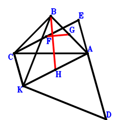
\(\because \) AD//CK and AD=2CK \(\therefore \small\overrightarrow{AD}=- 2 \small\overrightarrow{AC} + 2 \small\overrightarrow{AK}\).\(\because \) ECKA is a parallelogram \(\therefore \small\overrightarrow{AE}=\small\overrightarrow{AC} - \small\overrightarrow{AK}\).\(\because \) F is the midpoint of CE \(\therefore \small\overrightarrow{AF}=\dfrac{\small\overrightarrow{AC}}{2} + \dfrac{\small\overrightarrow{AE}}{2}=\small\overrightarrow{AC} - \dfrac{\small\overrightarrow{AK}}{2}\).\(\because \) G is the midpoint of BA \(\therefore \small\overrightarrow{AG}=\dfrac{\small\overrightarrow{AB}}{2}\).\(\because \) H is the midpoint of KA \(\therefore \small\overrightarrow{AH}=\dfrac{\small\overrightarrow{AK}}{2}\).\(\because \) CB⊥BA \(\therefore \small\overrightarrow{AB} \cdot \small\overrightarrow{CB}=\small\overrightarrow{AB} \cdot \left(\small\overrightarrow{AB} - \small\overrightarrow{AC}\right)=\small\overrightarrow{AB}^{2} - \small\overrightarrow{AB} \cdot \small\overrightarrow{AC}=0\) . . . . . . \(①\)\(\because \) BK⊥KD \(\therefore \small\overrightarrow{BK} \cdot \small\overrightarrow{DK}=\left(- \small\overrightarrow{AB} + \small\overrightarrow{AK}\right) \cdot \left(- \small\overrightarrow{AD} + \small\overrightarrow{AK}\right)=\left(- \small\overrightarrow{AB} + \small\overrightarrow{AK}\right) \cdot \left(2 \small\overrightarrow{AC} - \small\overrightarrow{AK}\right)=- 2 \small\overrightarrow{AB} \cdot \small\overrightarrow{AC} + \small\overrightarrow{AB} \cdot \small\overrightarrow{AK} + 2 \small\overrightarrow{AC} \cdot \small\overrightarrow{AK} - \small\overrightarrow{AK}^{2}=0\) . . . . . . \(②\)In conclusion, \(\small\overrightarrow{BH} \cdot \small\overrightarrow{FG}=\left(- \small\overrightarrow{AB} + \small\overrightarrow{AH}\right) \cdot \left(- \small\overrightarrow{AF} + \small\overrightarrow{AG}\right)=\left(- \small\overrightarrow{AB} + \dfrac{\small\overrightarrow{AK}}{2}\right) \cdot \left(\dfrac{\small\overrightarrow{AB}}{2} - \small\overrightarrow{AC} + \dfrac{\small\overrightarrow{AK}}{2}\right)=- \dfrac{\small\overrightarrow{AB}^{2}}{2} + \small\overrightarrow{AB} \cdot \small\overrightarrow{AC} - \dfrac{\small\overrightarrow{AB} \cdot \small\overrightarrow{AK}}{4} - \dfrac{\small\overrightarrow{AC} \cdot \small\overrightarrow{AK}}{2} + \dfrac{\small\overrightarrow{AK}^{2}}{4}=-1/2\cdot①-1/4\cdot②=0\), that is, FG⊥BH.
Exercise 389： Let KCBE be a parallelogram. DKCA is a trapezoid with DA//KC and DA=2KC. F is the midpoint of KA. DK⊥KB and CB⊥BA. Prove that CE⊥FB.
Exercise 390： Let DKCA be a trapezoid with DA//KC and DA=2KC. F, E are the midpoints of KB, KA, respectively. DK⊥KB and CB⊥BA. Prove that EB⊥CF.
\(\because \) DA//KC and DA=2KC \(\therefore \small\overrightarrow{BD}=\small\overrightarrow{BA} - 2 \small\overrightarrow{BC} + 2 \small\overrightarrow{BK}\).\(\because \) E is the midpoint of KA \(\therefore \small\overrightarrow{BE}=\dfrac{\small\overrightarrow{BA}}{2} + \dfrac{\small\overrightarrow{BK}}{2}\).\(\because \) F is the midpoint of KB \(\therefore \small\overrightarrow{BF}=\dfrac{\small\overrightarrow{BK}}{2}\).\(\because \) CB⊥BA \(\therefore \small\overrightarrow{BA} \cdot \small\overrightarrow{BC}=0\) . . . . . . \(①\)\(\because \) DK⊥KB \(\therefore \small\overrightarrow{BK} \cdot \small\overrightarrow{DK}=\small\overrightarrow{BK} \cdot \left(- \small\overrightarrow{BD} + \small\overrightarrow{BK}\right)=\small\overrightarrow{BK} \cdot \left(- \small\overrightarrow{BA} + 2 \small\overrightarrow{BC} - \small\overrightarrow{BK}\right)=- \small\overrightarrow{BA} \cdot \small\overrightarrow{BK} + 2 \small\overrightarrow{BC} \cdot \small\overrightarrow{BK} - \small\overrightarrow{BK}^{2}=0\) . . . . . . \(②\)In conclusion, \(\small\overrightarrow{BE} \cdot \small\overrightarrow{CF}=\small\overrightarrow{BE} \cdot \left(- \small\overrightarrow{BC} + \small\overrightarrow{BF}\right)=\left(\dfrac{\small\overrightarrow{BA}}{2} + \dfrac{\small\overrightarrow{BK}}{2}\right) \cdot \left(- \small\overrightarrow{BC} + \dfrac{\small\overrightarrow{BK}}{2}\right)=- \dfrac{\small\overrightarrow{BA} \cdot \small\overrightarrow{BC}}{2} + \dfrac{\small\overrightarrow{BA} \cdot \small\overrightarrow{BK}}{4} - \dfrac{\small\overrightarrow{BC} \cdot \small\overrightarrow{BK}}{2} + \dfrac{\small\overrightarrow{BK}^{2}}{4}=-1/2\cdot①-1/4\cdot②=0\), that is, EB⊥CF.
Exercise 393： Let FKCB be a parallelogram. DKCA is a trapezoid with DA//KC and DA=2KC. H, E, G are the midpoints of KA, CA, FA, respectively. BK⊥KD and CB⊥BA. Prove that EG⊥BH.
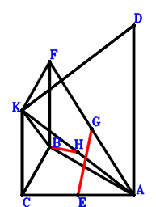
\(\because \) DA//KC and DA=2KC \(\therefore \small\overrightarrow{AD}=- 2 \small\overrightarrow{AC} + 2 \small\overrightarrow{AK}\).\(\because \) E is the midpoint of CA \(\therefore \small\overrightarrow{AE}=\dfrac{\small\overrightarrow{AC}}{2}\).\(\because \) FKCB is a parallelogram \(\therefore \small\overrightarrow{AF}=\small\overrightarrow{AB} - \small\overrightarrow{AC} + \small\overrightarrow{AK}\).\(\because \) G is the midpoint of FA \(\therefore \small\overrightarrow{AG}=\dfrac{\small\overrightarrow{AF}}{2}=\dfrac{\small\overrightarrow{AB}}{2} - \dfrac{\small\overrightarrow{AC}}{2} + \dfrac{\small\overrightarrow{AK}}{2}\).\(\because \) H is the midpoint of KA \(\therefore \small\overrightarrow{AH}=\dfrac{\small\overrightarrow{AK}}{2}\).\(\because \) CB⊥BA \(\therefore \small\overrightarrow{AB} \cdot \small\overrightarrow{CB}=\small\overrightarrow{AB} \cdot \left(\small\overrightarrow{AB} - \small\overrightarrow{AC}\right)=\small\overrightarrow{AB}^{2} - \small\overrightarrow{AB} \cdot \small\overrightarrow{AC}=0\) . . . . . . \(①\)\(\because \) BK⊥KD \(\therefore \small\overrightarrow{BK} \cdot \small\overrightarrow{DK}=\left(- \small\overrightarrow{AB} + \small\overrightarrow{AK}\right) \cdot \left(- \small\overrightarrow{AD} + \small\overrightarrow{AK}\right)=\left(- \small\overrightarrow{AB} + \small\overrightarrow{AK}\right) \cdot \left(2 \small\overrightarrow{AC} - \small\overrightarrow{AK}\right)=- 2 \small\overrightarrow{AB} \cdot \small\overrightarrow{AC} + \small\overrightarrow{AB} \cdot \small\overrightarrow{AK} + 2 \small\overrightarrow{AC} \cdot \small\overrightarrow{AK} - \small\overrightarrow{AK}^{2}=0\) . . . . . . \(②\)In conclusion, \(\small\overrightarrow{BH} \cdot \small\overrightarrow{EG}=\left(- \small\overrightarrow{AB} + \small\overrightarrow{AH}\right) \cdot \left(- \small\overrightarrow{AE} + \small\overrightarrow{AG}\right)=\left(- \small\overrightarrow{AB} + \dfrac{\small\overrightarrow{AK}}{2}\right) \cdot \left(\dfrac{\small\overrightarrow{AB}}{2} - \small\overrightarrow{AC} + \dfrac{\small\overrightarrow{AK}}{2}\right)=- \dfrac{\small\overrightarrow{AB}^{2}}{2} + \small\overrightarrow{AB} \cdot \small\overrightarrow{AC} - \dfrac{\small\overrightarrow{AB} \cdot \small\overrightarrow{AK}}{4} - \dfrac{\small\overrightarrow{AC} \cdot \small\overrightarrow{AK}}{2} + \dfrac{\small\overrightarrow{AK}^{2}}{4}=-1/2\cdot①-1/4\cdot②=0\), that is, EG⊥BH.
Exercise 396： Let CKDA be a trapezoid with AD//CK and AD=2CK. F is the centroid of △BKA. G, F, A are collinear and GA=3GF. E is the midpoint of KA. BK⊥KD and CB⊥BA. Prove that BE⊥CG.
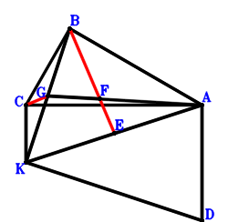
\(\because \) AD//CK and AD=2CK \(\therefore \small\overrightarrow{AD}=- 2 \small\overrightarrow{AC} + 2 \small\overrightarrow{AK}\).\(\because \) E is the midpoint of KA \(\therefore \small\overrightarrow{AE}=\dfrac{\small\overrightarrow{AK}}{2}\).\(\because \) F is the centroid of △BKA \(\therefore \small\overrightarrow{AF}=\dfrac{\small\overrightarrow{AB}}{3} + \dfrac{\small\overrightarrow{AK}}{3}\).\(\because \) G, F, A are collinear and GA=3GF \(\therefore \small\overrightarrow{AG}=\dfrac{3 \small\overrightarrow{AF}}{2}=\dfrac{\small\overrightarrow{AB}}{2} + \dfrac{\small\overrightarrow{AK}}{2}\).\(\because \) CB⊥BA \(\therefore \small\overrightarrow{AB} \cdot \small\overrightarrow{CB}=\small\overrightarrow{AB} \cdot \left(\small\overrightarrow{AB} - \small\overrightarrow{AC}\right)=\small\overrightarrow{AB}^{2} - \small\overrightarrow{AB} \cdot \small\overrightarrow{AC}=0\) . . . . . . \(①\)\(\because \) BK⊥KD \(\therefore \small\overrightarrow{BK} \cdot \small\overrightarrow{DK}=\left(- \small\overrightarrow{AB} + \small\overrightarrow{AK}\right) \cdot \left(- \small\overrightarrow{AD} + \small\overrightarrow{AK}\right)=\left(- \small\overrightarrow{AB} + \small\overrightarrow{AK}\right) \cdot \left(2 \small\overrightarrow{AC} - \small\overrightarrow{AK}\right)=- 2 \small\overrightarrow{AB} \cdot \small\overrightarrow{AC} + \small\overrightarrow{AB} \cdot \small\overrightarrow{AK} + 2 \small\overrightarrow{AC} \cdot \small\overrightarrow{AK} - \small\overrightarrow{AK}^{2}=0\) . . . . . . \(②\)In conclusion, \(\small\overrightarrow{BE} \cdot \small\overrightarrow{CG}=\left(- \small\overrightarrow{AB} + \small\overrightarrow{AE}\right) \cdot \left(- \small\overrightarrow{AC} + \small\overrightarrow{AG}\right)=\left(- \small\overrightarrow{AB} + \dfrac{\small\overrightarrow{AK}}{2}\right) \cdot \left(\dfrac{\small\overrightarrow{AB}}{2} - \small\overrightarrow{AC} + \dfrac{\small\overrightarrow{AK}}{2}\right)=- \dfrac{\small\overrightarrow{AB}^{2}}{2} + \small\overrightarrow{AB} \cdot \small\overrightarrow{AC} - \dfrac{\small\overrightarrow{AB} \cdot \small\overrightarrow{AK}}{4} - \dfrac{\small\overrightarrow{AC} \cdot \small\overrightarrow{AK}}{2} + \dfrac{\small\overrightarrow{AK}^{2}}{4}=-1/2\cdot①-1/4\cdot②=0\), that is, BE⊥CG.
Exercise 398： Let CADK be a trapezoid with AD//CK and AD=2CK. CBAE is a trapezoid with BA//CE and BA=2CE. F is the midpoint of KA. BK⊥KD and CB⊥BA. Prove that BF⊥FE.
Exercise 399： Let BCEA be a rectangle. CKDA is a trapezoid with AD//CK and AD=2CK. F, G are the midpoints of CE, KA, respectively. BK⊥KD. Prove that FG⊥GB.
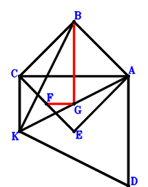
\(\because \) AD//CK and AD=2CK \(\therefore \small\overrightarrow{AD}=- 2 \small\overrightarrow{AC} + 2 \small\overrightarrow{AK}\).\(\because \) BCEA is a parallelogram \(\therefore \small\overrightarrow{AE}=- \small\overrightarrow{AB} + \small\overrightarrow{AC}\).\(\because \) F is the midpoint of CE \(\therefore \small\overrightarrow{AF}=\dfrac{\small\overrightarrow{AC}}{2} + \dfrac{\small\overrightarrow{AE}}{2}=- \dfrac{\small\overrightarrow{AB}}{2} + \small\overrightarrow{AC}\).\(\because \) G is the midpoint of KA \(\therefore \small\overrightarrow{AG}=\dfrac{\small\overrightarrow{AK}}{2}\).\(\because \) CB⊥BA \(\therefore \small\overrightarrow{AB} \cdot \small\overrightarrow{CB}=\small\overrightarrow{AB} \cdot \left(\small\overrightarrow{AB} - \small\overrightarrow{AC}\right)=\small\overrightarrow{AB}^{2} - \small\overrightarrow{AB} \cdot \small\overrightarrow{AC}=0\) . . . . . . \(①\)\(\because \) BK⊥KD \(\therefore \small\overrightarrow{BK} \cdot \small\overrightarrow{DK}=\left(- \small\overrightarrow{AB} + \small\overrightarrow{AK}\right) \cdot \left(- \small\overrightarrow{AD} + \small\overrightarrow{AK}\right)=\left(- \small\overrightarrow{AB} + \small\overrightarrow{AK}\right) \cdot \left(2 \small\overrightarrow{AC} - \small\overrightarrow{AK}\right)=- 2 \small\overrightarrow{AB} \cdot \small\overrightarrow{AC} + \small\overrightarrow{AB} \cdot \small\overrightarrow{AK} + 2 \small\overrightarrow{AC} \cdot \small\overrightarrow{AK} - \small\overrightarrow{AK}^{2}=0\) . . . . . . \(②\)In conclusion, \(\small\overrightarrow{BG} \cdot \small\overrightarrow{FG}=\left(- \small\overrightarrow{AB} + \small\overrightarrow{AG}\right) \cdot \left(- \small\overrightarrow{AF} + \small\overrightarrow{AG}\right)=\left(- \small\overrightarrow{AB} + \dfrac{\small\overrightarrow{AK}}{2}\right) \cdot \left(\dfrac{\small\overrightarrow{AB}}{2} - \small\overrightarrow{AC} + \dfrac{\small\overrightarrow{AK}}{2}\right)=- \dfrac{\small\overrightarrow{AB}^{2}}{2} + \small\overrightarrow{AB} \cdot \small\overrightarrow{AC} - \dfrac{\small\overrightarrow{AB} \cdot \small\overrightarrow{AK}}{4} - \dfrac{\small\overrightarrow{AC} \cdot \small\overrightarrow{AK}}{2} + \dfrac{\small\overrightarrow{AK}^{2}}{4}=-1/2\cdot①-1/4\cdot②=0\), that is, FG⊥GB.
Exercise 400： Let BCFE be a trapezoid with CB//FE and CB=2FE. CKDA is a trapezoid with AD//CK and AD=2CK. G, E are the midpoints of KA, CA, respectively. BK⊥KD and CB⊥BA. Prove that FG⊥GB.
Exercise 413： Let DKAC be a trapezoid with KA//DC and KA=2DC. CKAE is a trapezoid with KA//CE and KA=2CE. G, F are the midpoints of KA, BA, respectively. DK⊥KB and CB⊥BA. Prove that FE⊥GB.
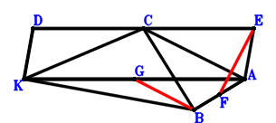
\(\because \) KA//DC and KA=2DC \(\therefore \small\overrightarrow{AD}=\small\overrightarrow{AC} + \dfrac{\small\overrightarrow{AK}}{2}\).\(\because \) KA//CE and KA=2CE \(\therefore \small\overrightarrow{AE}=\small\overrightarrow{AC} - \dfrac{\small\overrightarrow{AK}}{2}\).\(\because \) F is the midpoint of BA \(\therefore \small\overrightarrow{AF}=\dfrac{\small\overrightarrow{AB}}{2}\).\(\because \) G is the midpoint of KA \(\therefore \small\overrightarrow{AG}=\dfrac{\small\overrightarrow{AK}}{2}\).\(\because \) CB⊥BA \(\therefore \small\overrightarrow{AB} \cdot \small\overrightarrow{CB}=\small\overrightarrow{AB} \cdot \left(\small\overrightarrow{AB} - \small\overrightarrow{AC}\right)=\small\overrightarrow{AB}^{2} - \small\overrightarrow{AB} \cdot \small\overrightarrow{AC}=0\) . . . . . . \(①\)\(\because \) DK⊥KB \(\therefore \small\overrightarrow{BK} \cdot \small\overrightarrow{KD}=\left(- \small\overrightarrow{AB} + \small\overrightarrow{AK}\right) \cdot \left(\small\overrightarrow{AD} - \small\overrightarrow{AK}\right)=\left(- \small\overrightarrow{AB} + \small\overrightarrow{AK}\right) \cdot \left(\small\overrightarrow{AC} - \dfrac{\small\overrightarrow{AK}}{2}\right)=- \small\overrightarrow{AB} \cdot \small\overrightarrow{AC} + \dfrac{\small\overrightarrow{AB} \cdot \small\overrightarrow{AK}}{2} + \small\overrightarrow{AC} \cdot \small\overrightarrow{AK} - \dfrac{\small\overrightarrow{AK}^{2}}{2}=0\) . . . . . . \(②\)In conclusion, \(\small\overrightarrow{BG} \cdot \small\overrightarrow{EF}=\left(- \small\overrightarrow{AB} + \small\overrightarrow{AG}\right) \cdot \left(- \small\overrightarrow{AE} + \small\overrightarrow{AF}\right)=\left(- \small\overrightarrow{AB} + \dfrac{\small\overrightarrow{AK}}{2}\right) \cdot \left(\dfrac{\small\overrightarrow{AB}}{2} - \small\overrightarrow{AC} + \dfrac{\small\overrightarrow{AK}}{2}\right)=- \dfrac{\small\overrightarrow{AB}^{2}}{2} + \small\overrightarrow{AB} \cdot \small\overrightarrow{AC} - \dfrac{\small\overrightarrow{AB} \cdot \small\overrightarrow{AK}}{4} - \dfrac{\small\overrightarrow{AC} \cdot \small\overrightarrow{AK}}{2} + \dfrac{\small\overrightarrow{AK}^{2}}{4}=-1/2\cdot①-1/2\cdot②=0\), that is, FE⊥GB.
Exercise 415： Let CKEF be a trapezoid with KC//EF and KC=2EF. DKAC is a trapezoid with KA//DC and KA=2DC. H, E, G are the midpoints of KA, CA, BA, respectively. DK⊥KB and CB⊥BA. Prove that GF⊥HB.
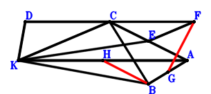
\(\because \) KA//DC and KA=2DC \(\therefore \small\overrightarrow{AD}=\small\overrightarrow{AC} + \dfrac{\small\overrightarrow{AK}}{2}\).\(\because \) E is the midpoint of CA \(\therefore \small\overrightarrow{AE}=\dfrac{\small\overrightarrow{AC}}{2}\).\(\because \) KC//EF and KC=2EF \(\therefore \small\overrightarrow{AF}=\small\overrightarrow{AC} - \dfrac{\small\overrightarrow{AK}}{2}\).\(\because \) G is the midpoint of BA \(\therefore \small\overrightarrow{AG}=\dfrac{\small\overrightarrow{AB}}{2}\).\(\because \) H is the midpoint of KA \(\therefore \small\overrightarrow{AH}=\dfrac{\small\overrightarrow{AK}}{2}\).\(\because \) CB⊥BA \(\therefore \small\overrightarrow{AB} \cdot \small\overrightarrow{CB}=\small\overrightarrow{AB} \cdot \left(\small\overrightarrow{AB} - \small\overrightarrow{AC}\right)=\small\overrightarrow{AB}^{2} - \small\overrightarrow{AB} \cdot \small\overrightarrow{AC}=0\) . . . . . . \(①\)\(\because \) DK⊥KB \(\therefore \small\overrightarrow{BK} \cdot \small\overrightarrow{KD}=\left(- \small\overrightarrow{AB} + \small\overrightarrow{AK}\right) \cdot \left(\small\overrightarrow{AD} - \small\overrightarrow{AK}\right)=\left(- \small\overrightarrow{AB} + \small\overrightarrow{AK}\right) \cdot \left(\small\overrightarrow{AC} - \dfrac{\small\overrightarrow{AK}}{2}\right)=- \small\overrightarrow{AB} \cdot \small\overrightarrow{AC} + \dfrac{\small\overrightarrow{AB} \cdot \small\overrightarrow{AK}}{2} + \small\overrightarrow{AC} \cdot \small\overrightarrow{AK} - \dfrac{\small\overrightarrow{AK}^{2}}{2}=0\) . . . . . . \(②\)In conclusion, \(\small\overrightarrow{BH} \cdot \small\overrightarrow{FG}=\left(- \small\overrightarrow{AB} + \small\overrightarrow{AH}\right) \cdot \left(- \small\overrightarrow{AF} + \small\overrightarrow{AG}\right)=\left(- \small\overrightarrow{AB} + \dfrac{\small\overrightarrow{AK}}{2}\right) \cdot \left(\dfrac{\small\overrightarrow{AB}}{2} - \small\overrightarrow{AC} + \dfrac{\small\overrightarrow{AK}}{2}\right)=- \dfrac{\small\overrightarrow{AB}^{2}}{2} + \small\overrightarrow{AB} \cdot \small\overrightarrow{AC} - \dfrac{\small\overrightarrow{AB} \cdot \small\overrightarrow{AK}}{4} - \dfrac{\small\overrightarrow{AC} \cdot \small\overrightarrow{AK}}{2} + \dfrac{\small\overrightarrow{AK}^{2}}{4}=-1/2\cdot①-1/2\cdot②=0\), that is, GF⊥HB.
Exercise 425： Let CEFB be a trapezoid with FB//EC and FB=2EC. DKAC is a trapezoid with KA//DC and KA=2DC. E is the midpoint of KA. DK⊥KB and CB⊥BA. Prove that FA⊥EB.
Exercise 434： Let DKAC be a trapezoid with KA//DC and KA=2DC. F is the centroid of △KBA. C, F, G are collinear and CG=3FG. H, E are the midpoints of KA, CA, respectively. DK⊥KB and CB⊥BA. Prove that GE⊥HB.
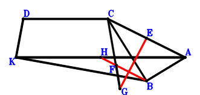
\(\because \) KA//DC and KA=2DC \(\therefore \small\overrightarrow{AD}=\small\overrightarrow{AC} + \dfrac{\small\overrightarrow{AK}}{2}\).\(\because \) E is the midpoint of CA \(\therefore \small\overrightarrow{AE}=\dfrac{\small\overrightarrow{AC}}{2}\).\(\because \) F is the centroid of △KBA \(\therefore \small\overrightarrow{AF}=\dfrac{\small\overrightarrow{AB}}{3} + \dfrac{\small\overrightarrow{AK}}{3}\).\(\because \) C, F, G are collinear and CG=3FG \(\therefore \small\overrightarrow{AG}=- \dfrac{\small\overrightarrow{AC}}{2} + \dfrac{3 \small\overrightarrow{AF}}{2}=\dfrac{\small\overrightarrow{AB}}{2} - \dfrac{\small\overrightarrow{AC}}{2} + \dfrac{\small\overrightarrow{AK}}{2}\).\(\because \) H is the midpoint of KA \(\therefore \small\overrightarrow{AH}=\dfrac{\small\overrightarrow{AK}}{2}\).\(\because \) CB⊥BA \(\therefore \small\overrightarrow{AB} \cdot \small\overrightarrow{CB}=\small\overrightarrow{AB} \cdot \left(\small\overrightarrow{AB} - \small\overrightarrow{AC}\right)=\small\overrightarrow{AB}^{2} - \small\overrightarrow{AB} \cdot \small\overrightarrow{AC}=0\) . . . . . . \(①\)\(\because \) DK⊥KB \(\therefore \small\overrightarrow{BK} \cdot \small\overrightarrow{KD}=\left(- \small\overrightarrow{AB} + \small\overrightarrow{AK}\right) \cdot \left(\small\overrightarrow{AD} - \small\overrightarrow{AK}\right)=\left(- \small\overrightarrow{AB} + \small\overrightarrow{AK}\right) \cdot \left(\small\overrightarrow{AC} - \dfrac{\small\overrightarrow{AK}}{2}\right)=- \small\overrightarrow{AB} \cdot \small\overrightarrow{AC} + \dfrac{\small\overrightarrow{AB} \cdot \small\overrightarrow{AK}}{2} + \small\overrightarrow{AC} \cdot \small\overrightarrow{AK} - \dfrac{\small\overrightarrow{AK}^{2}}{2}=0\) . . . . . . \(②\)In conclusion, \(\small\overrightarrow{BH} \cdot \small\overrightarrow{EG}=\left(- \small\overrightarrow{AB} + \small\overrightarrow{AH}\right) \cdot \left(- \small\overrightarrow{AE} + \small\overrightarrow{AG}\right)=\left(- \small\overrightarrow{AB} + \dfrac{\small\overrightarrow{AK}}{2}\right) \cdot \left(\dfrac{\small\overrightarrow{AB}}{2} - \small\overrightarrow{AC} + \dfrac{\small\overrightarrow{AK}}{2}\right)=- \dfrac{\small\overrightarrow{AB}^{2}}{2} + \small\overrightarrow{AB} \cdot \small\overrightarrow{AC} - \dfrac{\small\overrightarrow{AB} \cdot \small\overrightarrow{AK}}{4} - \dfrac{\small\overrightarrow{AC} \cdot \small\overrightarrow{AK}}{2} + \dfrac{\small\overrightarrow{AK}^{2}}{4}=-1/2\cdot①-1/2\cdot②=0\), that is, GE⊥HB.
Exercise 702： Let CKFE be a trapezoid with KC//FE and KC=2FE. D, E, G are the midpoints of AC, AB, AK, respectively. AK⊥KB, AB⊥BC and CK⊥KB. Prove that FD⊥GB.
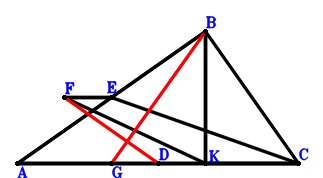
\(\because \) D is the midpoint of AC \(\therefore \small\overrightarrow{BD}=\dfrac{\small\overrightarrow{BA}}{2} + \dfrac{\small\overrightarrow{BC}}{2}\).\(\because \) E is the midpoint of AB \(\therefore \small\overrightarrow{BE}=\dfrac{\small\overrightarrow{BA}}{2}\).\(\because \) KC//FE and KC=2FE \(\therefore \small\overrightarrow{BF}=\dfrac{\small\overrightarrow{BA}}{2} - \dfrac{\small\overrightarrow{BC}}{2} + \dfrac{\small\overrightarrow{BK}}{2}\).\(\because \) G is the midpoint of AK \(\therefore \small\overrightarrow{BG}=\dfrac{\small\overrightarrow{BA}}{2} + \dfrac{\small\overrightarrow{BK}}{2}\).\(\because \) AB⊥BC \(\therefore \small\overrightarrow{BA} \cdot \small\overrightarrow{BC}=0\) . . . . . . \(①\)\(\because \) AK⊥KB \(\therefore \small\overrightarrow{BK} \cdot \small\overrightarrow{KA}=\small\overrightarrow{BK} \cdot \left(\small\overrightarrow{BA} - \small\overrightarrow{BK}\right)=\small\overrightarrow{BA} \cdot \small\overrightarrow{BK} - \small\overrightarrow{BK}^{2}=0\) . . . . . . \(②\)\(\because \) CK⊥KB \(\therefore \small\overrightarrow{BK} \cdot \small\overrightarrow{CK}=\small\overrightarrow{BK} \cdot \left(- \small\overrightarrow{BC} + \small\overrightarrow{BK}\right)=- \small\overrightarrow{BC} \cdot \small\overrightarrow{BK} + \small\overrightarrow{BK}^{2}=0\) . . . . . . \(③\)In conclusion, \(\small\overrightarrow{BG} \cdot \small\overrightarrow{DF}=\small\overrightarrow{BG} \cdot \left(- \small\overrightarrow{BD} + \small\overrightarrow{BF}\right)=\left(\dfrac{\small\overrightarrow{BA}}{2} + \dfrac{\small\overrightarrow{BK}}{2}\right) \cdot \left(- \small\overrightarrow{BC} + \dfrac{\small\overrightarrow{BK}}{2}\right)=- \dfrac{\small\overrightarrow{BA} \cdot \small\overrightarrow{BC}}{2} + \dfrac{\small\overrightarrow{BA} \cdot \small\overrightarrow{BK}}{4} - \dfrac{\small\overrightarrow{BC} \cdot \small\overrightarrow{BK}}{2} + \dfrac{\small\overrightarrow{BK}^{2}}{4}=-1/2\cdot①+1/4\cdot②+1/2\cdot③=0\), that is, FD⊥GB.
Exercise 706： Let CKED be a trapezoid with EK//DC and EK=2DC. D, F are the midpoints of AB, AK, respectively. AK⊥KB, AB⊥BC and CK⊥KB. Prove that EA⊥FB.
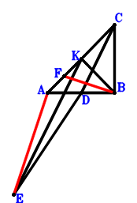
\(\because \) D is the midpoint of AB \(\therefore \small\overrightarrow{BD}=\dfrac{\small\overrightarrow{BA}}{2}\).\(\because \) EK//DC and EK=2DC \(\therefore \small\overrightarrow{BE}=- 2 \small\overrightarrow{BC} + 2 \small\overrightarrow{BD} + \small\overrightarrow{BK}=\small\overrightarrow{BA} - 2 \small\overrightarrow{BC} + \small\overrightarrow{BK}\).\(\because \) F is the midpoint of AK \(\therefore \small\overrightarrow{BF}=\dfrac{\small\overrightarrow{BA}}{2} + \dfrac{\small\overrightarrow{BK}}{2}\).\(\because \) AB⊥BC \(\therefore \small\overrightarrow{BA} \cdot \small\overrightarrow{BC}=0\) . . . . . . \(①\)\(\because \) AK⊥KB \(\therefore \small\overrightarrow{BK} \cdot \small\overrightarrow{KA}=\small\overrightarrow{BK} \cdot \left(\small\overrightarrow{BA} - \small\overrightarrow{BK}\right)=\small\overrightarrow{BA} \cdot \small\overrightarrow{BK} - \small\overrightarrow{BK}^{2}=0\) . . . . . . \(②\)\(\because \) CK⊥KB \(\therefore \small\overrightarrow{BK} \cdot \small\overrightarrow{CK}=\small\overrightarrow{BK} \cdot \left(- \small\overrightarrow{BC} + \small\overrightarrow{BK}\right)=- \small\overrightarrow{BC} \cdot \small\overrightarrow{BK} + \small\overrightarrow{BK}^{2}=0\) . . . . . . \(③\)In conclusion, \(\small\overrightarrow{AE} \cdot \small\overrightarrow{BF}=\small\overrightarrow{BF} \cdot \left(- \small\overrightarrow{BA} + \small\overrightarrow{BE}\right)=\left(\dfrac{\small\overrightarrow{BA}}{2} + \dfrac{\small\overrightarrow{BK}}{2}\right) \cdot \left(- 2 \small\overrightarrow{BC} + \small\overrightarrow{BK}\right)=- \small\overrightarrow{BA} \cdot \small\overrightarrow{BC} + \dfrac{\small\overrightarrow{BA} \cdot \small\overrightarrow{BK}}{2} - \small\overrightarrow{BC} \cdot \small\overrightarrow{BK} + \dfrac{\small\overrightarrow{BK}^{2}}{2}=-①+1/2\cdot②+③=0\), that is, EA⊥FB.
Exercise 710： Let D, E be the midpoints of AK, KB, respectively. AK⊥KB, AB⊥BC and CK⊥KB. Prove that DB⊥EC.
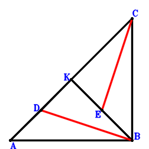
\(\because \) D is the midpoint of AK \(\therefore \small\overrightarrow{BD}=\dfrac{\small\overrightarrow{BA}}{2} + \dfrac{\small\overrightarrow{BK}}{2}\).\(\because \) E is the midpoint of KB \(\therefore \small\overrightarrow{BE}=\dfrac{\small\overrightarrow{BK}}{2}\).\(\because \) AB⊥BC \(\therefore \small\overrightarrow{BA} \cdot \small\overrightarrow{BC}=0\) . . . . . . \(①\)\(\because \) AK⊥KB \(\therefore \small\overrightarrow{BK} \cdot \small\overrightarrow{KA}=\small\overrightarrow{BK} \cdot \left(\small\overrightarrow{BA} - \small\overrightarrow{BK}\right)=\small\overrightarrow{BA} \cdot \small\overrightarrow{BK} - \small\overrightarrow{BK}^{2}=0\) . . . . . . \(②\)\(\because \) CK⊥KB \(\therefore \small\overrightarrow{BK} \cdot \small\overrightarrow{CK}=\small\overrightarrow{BK} \cdot \left(- \small\overrightarrow{BC} + \small\overrightarrow{BK}\right)=- \small\overrightarrow{BC} \cdot \small\overrightarrow{BK} + \small\overrightarrow{BK}^{2}=0\) . . . . . . \(③\)In conclusion, \(\small\overrightarrow{BD} \cdot \small\overrightarrow{CE}=\small\overrightarrow{BD} \cdot \left(- \small\overrightarrow{BC} + \small\overrightarrow{BE}\right)=\left(\dfrac{\small\overrightarrow{BA}}{2} + \dfrac{\small\overrightarrow{BK}}{2}\right) \cdot \left(- \small\overrightarrow{BC} + \dfrac{\small\overrightarrow{BK}}{2}\right)=- \dfrac{\small\overrightarrow{BA} \cdot \small\overrightarrow{BC}}{2} + \dfrac{\small\overrightarrow{BA} \cdot \small\overrightarrow{BK}}{4} - \dfrac{\small\overrightarrow{BC} \cdot \small\overrightarrow{BK}}{2} + \dfrac{\small\overrightarrow{BK}^{2}}{4}=-1/2\cdot①+1/4\cdot②+1/2\cdot③=0\), that is, DB⊥EC.
Exercise 712： Let CAEB be a parallelogram. D, G, F are the midpoints of AC, AK, EK, respectively. AK⊥KB, AB⊥BC and CK⊥KB. Prove that FD⊥GB.
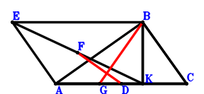
\(\because \) D is the midpoint of AC \(\therefore \small\overrightarrow{BD}=\dfrac{\small\overrightarrow{BA}}{2} + \dfrac{\small\overrightarrow{BC}}{2}\).\(\because \) CAEB is a parallelogram \(\therefore \small\overrightarrow{BE}=\small\overrightarrow{BA} - \small\overrightarrow{BC}\).\(\because \) F is the midpoint of EK \(\therefore \small\overrightarrow{BF}=\dfrac{\small\overrightarrow{BE}}{2} + \dfrac{\small\overrightarrow{BK}}{2}=\dfrac{\small\overrightarrow{BA}}{2} - \dfrac{\small\overrightarrow{BC}}{2} + \dfrac{\small\overrightarrow{BK}}{2}\).\(\because \) G is the midpoint of AK \(\therefore \small\overrightarrow{BG}=\dfrac{\small\overrightarrow{BA}}{2} + \dfrac{\small\overrightarrow{BK}}{2}\).\(\because \) AB⊥BC \(\therefore \small\overrightarrow{BA} \cdot \small\overrightarrow{BC}=0\) . . . . . . \(①\)\(\because \) AK⊥KB \(\therefore \small\overrightarrow{BK} \cdot \small\overrightarrow{KA}=\small\overrightarrow{BK} \cdot \left(\small\overrightarrow{BA} - \small\overrightarrow{BK}\right)=\small\overrightarrow{BA} \cdot \small\overrightarrow{BK} - \small\overrightarrow{BK}^{2}=0\) . . . . . . \(②\)\(\because \) CK⊥KB \(\therefore \small\overrightarrow{BK} \cdot \small\overrightarrow{CK}=\small\overrightarrow{BK} \cdot \left(- \small\overrightarrow{BC} + \small\overrightarrow{BK}\right)=- \small\overrightarrow{BC} \cdot \small\overrightarrow{BK} + \small\overrightarrow{BK}^{2}=0\) . . . . . . \(③\)In conclusion, \(\small\overrightarrow{BG} \cdot \small\overrightarrow{DF}=\small\overrightarrow{BG} \cdot \left(- \small\overrightarrow{BD} + \small\overrightarrow{BF}\right)=\left(\dfrac{\small\overrightarrow{BA}}{2} + \dfrac{\small\overrightarrow{BK}}{2}\right) \cdot \left(- \small\overrightarrow{BC} + \dfrac{\small\overrightarrow{BK}}{2}\right)=- \dfrac{\small\overrightarrow{BA} \cdot \small\overrightarrow{BC}}{2} + \dfrac{\small\overrightarrow{BA} \cdot \small\overrightarrow{BK}}{4} - \dfrac{\small\overrightarrow{BC} \cdot \small\overrightarrow{BK}}{2} + \dfrac{\small\overrightarrow{BK}^{2}}{4}=-1/2\cdot①+1/4\cdot②+1/2\cdot③=0\), that is, FD⊥GB.
Exercise 714： Let E be the centroid of △KAB. F, E, C are collinear and FC=3FE. D, G are the midpoints of AC, AK, respectively. AK⊥KB, AB⊥BC and CK⊥KB. Prove that FD⊥GB.
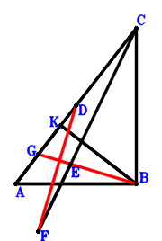
\(\because \) D is the midpoint of AC \(\therefore \small\overrightarrow{BD}=\dfrac{\small\overrightarrow{BA}}{2} + \dfrac{\small\overrightarrow{BC}}{2}\).\(\because \) E is the centroid of △KAB \(\therefore \small\overrightarrow{BE}=\dfrac{\small\overrightarrow{BA}}{3} + \dfrac{\small\overrightarrow{BK}}{3}\).\(\because \) F, E, C are collinear and FC=3FE \(\therefore \small\overrightarrow{BF}=- \dfrac{\small\overrightarrow{BC}}{2} + \dfrac{3 \small\overrightarrow{BE}}{2}=\dfrac{\small\overrightarrow{BA}}{2} - \dfrac{\small\overrightarrow{BC}}{2} + \dfrac{\small\overrightarrow{BK}}{2}\).\(\because \) G is the midpoint of AK \(\therefore \small\overrightarrow{BG}=\dfrac{\small\overrightarrow{BA}}{2} + \dfrac{\small\overrightarrow{BK}}{2}\).\(\because \) AB⊥BC \(\therefore \small\overrightarrow{BA} \cdot \small\overrightarrow{BC}=0\) . . . . . . \(①\)\(\because \) AK⊥KB \(\therefore \small\overrightarrow{BK} \cdot \small\overrightarrow{KA}=\small\overrightarrow{BK} \cdot \left(\small\overrightarrow{BA} - \small\overrightarrow{BK}\right)=\small\overrightarrow{BA} \cdot \small\overrightarrow{BK} - \small\overrightarrow{BK}^{2}=0\) . . . . . . \(②\)\(\because \) CK⊥KB \(\therefore \small\overrightarrow{BK} \cdot \small\overrightarrow{CK}=\small\overrightarrow{BK} \cdot \left(- \small\overrightarrow{BC} + \small\overrightarrow{BK}\right)=- \small\overrightarrow{BC} \cdot \small\overrightarrow{BK} + \small\overrightarrow{BK}^{2}=0\) . . . . . . \(③\)In conclusion, \(\small\overrightarrow{BG} \cdot \small\overrightarrow{DF}=\small\overrightarrow{BG} \cdot \left(- \small\overrightarrow{BD} + \small\overrightarrow{BF}\right)=\left(\dfrac{\small\overrightarrow{BA}}{2} + \dfrac{\small\overrightarrow{BK}}{2}\right) \cdot \left(- \small\overrightarrow{BC} + \dfrac{\small\overrightarrow{BK}}{2}\right)=- \dfrac{\small\overrightarrow{BA} \cdot \small\overrightarrow{BC}}{2} + \dfrac{\small\overrightarrow{BA} \cdot \small\overrightarrow{BK}}{4} - \dfrac{\small\overrightarrow{BC} \cdot \small\overrightarrow{BK}}{2} + \dfrac{\small\overrightarrow{BK}^{2}}{4}=-1/2\cdot①+1/4\cdot②+1/2\cdot③=0\), that is, FD⊥GB.
Exercise 715： Let KABE be a parallelogram. D, F are the midpoints of AK, AE, respectively. AK⊥KB, AB⊥BC and CK⊥KB. Prove that DB⊥FC.
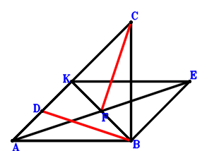
\(\because \) D is the midpoint of AK \(\therefore \small\overrightarrow{BD}=\dfrac{\small\overrightarrow{BA}}{2} + \dfrac{\small\overrightarrow{BK}}{2}\).\(\because \) KABE is a parallelogram \(\therefore \small\overrightarrow{BE}=- \small\overrightarrow{BA} + \small\overrightarrow{BK}\).\(\because \) F is the midpoint of AE \(\therefore \small\overrightarrow{BF}=\dfrac{\small\overrightarrow{BA}}{2} + \dfrac{\small\overrightarrow{BE}}{2}=\dfrac{\small\overrightarrow{BK}}{2}\).\(\because \) AB⊥BC \(\therefore \small\overrightarrow{BA} \cdot \small\overrightarrow{BC}=0\) . . . . . . \(①\)\(\because \) AK⊥KB \(\therefore \small\overrightarrow{BK} \cdot \small\overrightarrow{KA}=\small\overrightarrow{BK} \cdot \left(\small\overrightarrow{BA} - \small\overrightarrow{BK}\right)=\small\overrightarrow{BA} \cdot \small\overrightarrow{BK} - \small\overrightarrow{BK}^{2}=0\) . . . . . . \(②\)\(\because \) CK⊥KB \(\therefore \small\overrightarrow{BK} \cdot \small\overrightarrow{CK}=\small\overrightarrow{BK} \cdot \left(- \small\overrightarrow{BC} + \small\overrightarrow{BK}\right)=- \small\overrightarrow{BC} \cdot \small\overrightarrow{BK} + \small\overrightarrow{BK}^{2}=0\) . . . . . . \(③\)In conclusion, \(\small\overrightarrow{BD} \cdot \small\overrightarrow{CF}=\small\overrightarrow{BD} \cdot \left(- \small\overrightarrow{BC} + \small\overrightarrow{BF}\right)=\left(\dfrac{\small\overrightarrow{BA}}{2} + \dfrac{\small\overrightarrow{BK}}{2}\right) \cdot \left(- \small\overrightarrow{BC} + \dfrac{\small\overrightarrow{BK}}{2}\right)=- \dfrac{\small\overrightarrow{BA} \cdot \small\overrightarrow{BC}}{2} + \dfrac{\small\overrightarrow{BA} \cdot \small\overrightarrow{BK}}{4} - \dfrac{\small\overrightarrow{BC} \cdot \small\overrightarrow{BK}}{2} + \dfrac{\small\overrightarrow{BK}^{2}}{4}=-1/2\cdot①+1/4\cdot②+1/2\cdot③=0\), that is, DB⊥FC.
Exercise 716： Let E be the centroid of △KAB. A, E, F are collinear and AF=3EF. D is the midpoint of AK. AK⊥KB, AB⊥BC and CK⊥KB. Prove that DB⊥FC.
\(\because \) D is the midpoint of AK \(\therefore \small\overrightarrow{BD}=\dfrac{\small\overrightarrow{BA}}{2} + \dfrac{\small\overrightarrow{BK}}{2}\).\(\because \) E is the centroid of △KAB \(\therefore \small\overrightarrow{BE}=\dfrac{\small\overrightarrow{BA}}{3} + \dfrac{\small\overrightarrow{BK}}{3}\).\(\because \) A, E, F are collinear and AF=3EF \(\therefore \small\overrightarrow{BF}=- \dfrac{\small\overrightarrow{BA}}{2} + \dfrac{3 \small\overrightarrow{BE}}{2}=\dfrac{\small\overrightarrow{BK}}{2}\).\(\because \) AB⊥BC \(\therefore \small\overrightarrow{BA} \cdot \small\overrightarrow{BC}=0\) . . . . . . \(①\)\(\because \) AK⊥KB \(\therefore \small\overrightarrow{BK} \cdot \small\overrightarrow{KA}=\small\overrightarrow{BK} \cdot \left(\small\overrightarrow{BA} - \small\overrightarrow{BK}\right)=\small\overrightarrow{BA} \cdot \small\overrightarrow{BK} - \small\overrightarrow{BK}^{2}=0\) . . . . . . \(②\)\(\because \) CK⊥KB \(\therefore \small\overrightarrow{BK} \cdot \small\overrightarrow{CK}=\small\overrightarrow{BK} \cdot \left(- \small\overrightarrow{BC} + \small\overrightarrow{BK}\right)=- \small\overrightarrow{BC} \cdot \small\overrightarrow{BK} + \small\overrightarrow{BK}^{2}=0\) . . . . . . \(③\)In conclusion, \(\small\overrightarrow{BD} \cdot \small\overrightarrow{CF}=\small\overrightarrow{BD} \cdot \left(- \small\overrightarrow{BC} + \small\overrightarrow{BF}\right)=\left(\dfrac{\small\overrightarrow{BA}}{2} + \dfrac{\small\overrightarrow{BK}}{2}\right) \cdot \left(- \small\overrightarrow{BC} + \dfrac{\small\overrightarrow{BK}}{2}\right)=- \dfrac{\small\overrightarrow{BA} \cdot \small\overrightarrow{BC}}{2} + \dfrac{\small\overrightarrow{BA} \cdot \small\overrightarrow{BK}}{4} - \dfrac{\small\overrightarrow{BC} \cdot \small\overrightarrow{BK}}{2} + \dfrac{\small\overrightarrow{BK}^{2}}{4}=-1/2\cdot①+1/4\cdot②+1/2\cdot③=0\), that is, DB⊥FC.
Exercise 718： Let DABC be a trapezoid with AB//DC and AB=2DC. E is the midpoint of AK. AK⊥KB, DE⊥EB and AB⊥BC. Prove that CK⊥KB.
Exercise 719： Let DABC be a rectangle. F, E are the midpoints of AK, DC, respectively. AK⊥KB and EF⊥FB. Prove that CK⊥KB.
\(\because \) DABC is a parallelogram \(\therefore \small\overrightarrow{BD}=\small\overrightarrow{BA} + \small\overrightarrow{BC}\).\(\because \) E is the midpoint of DC \(\therefore \small\overrightarrow{BE}=\dfrac{\small\overrightarrow{BC}}{2} + \dfrac{\small\overrightarrow{BD}}{2}=\dfrac{\small\overrightarrow{BA}}{2} + \small\overrightarrow{BC}\).\(\because \) F is the midpoint of AK \(\therefore \small\overrightarrow{BF}=\dfrac{\small\overrightarrow{BA}}{2} + \dfrac{\small\overrightarrow{BK}}{2}\).\(\because \) AB⊥BC \(\therefore \small\overrightarrow{BA} \cdot \small\overrightarrow{BC}=0\) . . . . . . \(①\)\(\because \) EF⊥FB \(\therefore \small\overrightarrow{BF} \cdot \small\overrightarrow{EF}=\small\overrightarrow{BF} \cdot \left(- \small\overrightarrow{BE} + \small\overrightarrow{BF}\right)=\left(\dfrac{\small\overrightarrow{BA}}{2} + \dfrac{\small\overrightarrow{BK}}{2}\right) \cdot \left(- \small\overrightarrow{BC} + \dfrac{\small\overrightarrow{BK}}{2}\right)=- \dfrac{\small\overrightarrow{BA} \cdot \small\overrightarrow{BC}}{2} + \dfrac{\small\overrightarrow{BA} \cdot \small\overrightarrow{BK}}{4} - \dfrac{\small\overrightarrow{BC} \cdot \small\overrightarrow{BK}}{2} + \dfrac{\small\overrightarrow{BK}^{2}}{4}=0\) . . . . . . \(②\)\(\because \) AK⊥KB \(\therefore \small\overrightarrow{BK} \cdot \small\overrightarrow{KA}=\small\overrightarrow{BK} \cdot \left(\small\overrightarrow{BA} - \small\overrightarrow{BK}\right)=\small\overrightarrow{BA} \cdot \small\overrightarrow{BK} - \small\overrightarrow{BK}^{2}=0\) . . . . . . \(③\)In conclusion, \(\small\overrightarrow{BK} \cdot \small\overrightarrow{CK}=\small\overrightarrow{BK} \cdot \left(- \small\overrightarrow{BC} + \small\overrightarrow{BK}\right)=- \small\overrightarrow{BC} \cdot \small\overrightarrow{BK} + \small\overrightarrow{BK}^{2}=①+2\cdot②-1/2\cdot③=0\), that is, CK⊥KB.
Exercise 720： Let ECBD be a trapezoid with CB//ED and CB=2ED. D, F are the midpoints of CA, KA, respectively. AK⊥KB, CB⊥BA and EF⊥FB. Prove that CK⊥KB.
\(\because \) D is the midpoint of CA \(\therefore \small\overrightarrow{BD}=\dfrac{\small\overrightarrow{BA}}{2} + \dfrac{\small\overrightarrow{BC}}{2}\).\(\because \) CB//ED and CB=2ED \(\therefore \small\overrightarrow{BE}=\dfrac{\small\overrightarrow{BA}}{2} + \small\overrightarrow{BC}\).\(\because \) F is the midpoint of KA \(\therefore \small\overrightarrow{BF}=\dfrac{\small\overrightarrow{BA}}{2} + \dfrac{\small\overrightarrow{BK}}{2}\).\(\because \) CB⊥BA \(\therefore \small\overrightarrow{BA} \cdot \small\overrightarrow{BC}=0\) . . . . . . \(①\)\(\because \) EF⊥FB \(\therefore \small\overrightarrow{BF} \cdot \small\overrightarrow{EF}=\small\overrightarrow{BF} \cdot \left(- \small\overrightarrow{BE} + \small\overrightarrow{BF}\right)=\left(\dfrac{\small\overrightarrow{BA}}{2} + \dfrac{\small\overrightarrow{BK}}{2}\right) \cdot \left(- \small\overrightarrow{BC} + \dfrac{\small\overrightarrow{BK}}{2}\right)=- \dfrac{\small\overrightarrow{BA} \cdot \small\overrightarrow{BC}}{2} + \dfrac{\small\overrightarrow{BA} \cdot \small\overrightarrow{BK}}{4} - \dfrac{\small\overrightarrow{BC} \cdot \small\overrightarrow{BK}}{2} + \dfrac{\small\overrightarrow{BK}^{2}}{4}=0\) . . . . . . \(②\)\(\because \) AK⊥KB \(\therefore \small\overrightarrow{BK} \cdot \small\overrightarrow{KA}=\small\overrightarrow{BK} \cdot \left(\small\overrightarrow{BA} - \small\overrightarrow{BK}\right)=\small\overrightarrow{BA} \cdot \small\overrightarrow{BK} - \small\overrightarrow{BK}^{2}=0\) . . . . . . \(③\)In conclusion, \(\small\overrightarrow{BK} \cdot \small\overrightarrow{CK}=\small\overrightarrow{BK} \cdot \left(- \small\overrightarrow{BC} + \small\overrightarrow{BK}\right)=- \small\overrightarrow{BC} \cdot \small\overrightarrow{BK} + \small\overrightarrow{BK}^{2}=①+2\cdot②-1/2\cdot③=0\), that is, CK⊥KB.